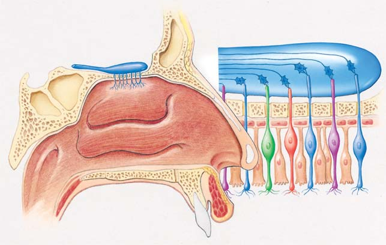
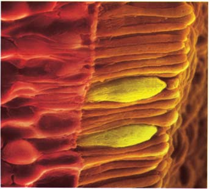
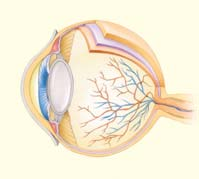
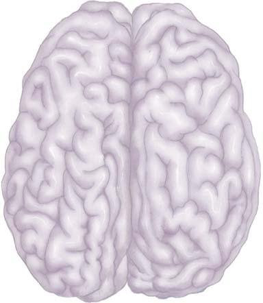
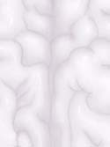
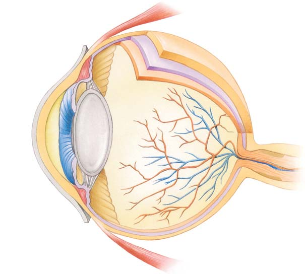

43 Sistemas sensoriales
911
CONCEPTOS CLAVE
43.1 El procesamiento sensorial incluye recepción sensorial, transducción de energía, transmisión de señales e interpretación en el sistema nervioso central. 43.2 Los termorreceptores responden al calor y al frío. 43.3 Algunas especies de depredadores como tiburones, rayas y peces óseos tienen electrorreceptores que detectan campos eléctricos generados en el agua por la actividad de otros animales. Los receptores electromagnéticos son electrorreceptores que detectan el campo magnético de la Tierra. 43.4 Las dendritas de ciertas neuronas sensoriales son nociceptores (receptores del dolor) 43.5 Los mecanorreceptores responden al tacto, la presión, la fuerza de gravedad, el estiramiento o el movimiento. La mayoría de los animales tienen mecanorreceptores que detectan movimiento y posición; en los vertebrados, el aparato vestibular en el oído interno ayuda a mantener el equilibrio, y el órgano de Corti dentro de la cóclea del oído interno contiene receptores auditivos. 43.6 La mayoría de los animales tienen quimiorreceptores para el gusto y el olfato que detectan sustancias químicas en comida, agua y aire. 43.7 Casi todos los animales tienen fotorreceptores que responden a la luz, y la mayoría de los animales tienen ojos que forman imágenes; en los vertebrados, la retina del ojo contiene las células fotorreceptoras, los bastoncillos y los conos.
¿
Ha escuchado los chasquidos de los delfi nes? Los humanos pueden oír sólo un número limitado de la amplia gama de frecuencias sonoras que emiten los delfi nes. Los delfi nes, murciélagos y otros vertebrados detectan objetos distantes por ecolocalización , algunas veces denominada biosonar. La ecolocalización trabaja de manera semejante a un radar, aunque usa sonido en lugar de ondas de radio. Por ejemplo, un murciélago emite sonidos agudos que rebotan en los objetos en su trayectoria y son devueltos por el eco. Al responder rápidamente al eco, el murciélago evita hábilmente los obstáculos y atrapa a la presa (vea la fotografía). Al usar ecolocalización, los murciélagos y los delfi nes determinan el tamaño, la forma, la textura y la densidad de un objeto, así como su ubicación. La habilidad para detectar sonidos emitidos por algunos murciélagos de forrajeo se ha desarrollado en ciertas polillas y otros insectos que son sus presas. En el transcurso de la evolución, algunas especies de murciélagos se han adaptado a esta habilidad de su presa; ahora emiten sonidos aún más agudos que su presa no puede detectar. Los investigadores han reportado recientemente otra adaptación interesante. Hay evidencia de que algunas polillas emiten chasquidos ultrasónicos que causan interferencia con la ecolocalización del murciélago. Los sistemas sensoriales transfi eren información del mundo exterior al animal. Informan al animal acerca de depredadores, alimento, agua, posibles parejas, temperatura y otros cambios en el entorno. Los tipos de receptores sensoriales que tiene un animal y las formas en que el cerebro percibe la información sensorial entrante determinan cómo es el mundo del animal.
Los murciélagos son guiados por el eco. Este murciélago nariz de hoja de California ( Macrotus californicus ) ha localizado un insecto.
Merlin D. Tuttle/Bat Conservation International/Photo Researchers, Inc.
912 Capítulo 43
Los humanos vivimos en un mundo ricamente policromo, con muchas formas y diversos sonidos. Sin embargo, no podemos oír los silbidos agudos que los perros y los gatos sí perciben, o los sonidos ultrasónicos que los murciélagos emplean para orientarse en el vuelo. ¡Tampoco reconocemos normalmente a nuestros amigos según sus olores distintivos! Y aunque la visión es nuestro sentido dominante y más refi nado, somos ciegos a los tonos de luz ultravioleta (UV) que iluminan el mundo para los insectos. A diferencia de las aves y algunos otros animales, no podemos detectar los cambios en campos magnéticos. Tampoco podemos detectar campos eléctricos como los tiburones y muchas otras especies de peces. Los humanos estamos más familiarizados con los sentidos de la vista, el oído, el olfato, el gusto y el tacto, aunque hay otros sentidos. De hecho, el tacto es un sentido compuesto que nos permite detectar la presión, el dolor y la temperatura. Algunos receptores sensoriales nos permiten experimentar equilibrio, tensión muscular y la posición de las articulaciones, con lo cual estamos conscientes de nuestros cuerpos. En este capítulo primero examinamos cómo funcionan los sistemas sensoriales. Luego introducimos los tipos principales de receptores sensoriales. A continuación analizamos varios tipos de receptores sensoriales, recalcando los receptores auditivos y visuales.
43.1 CÓMO FUNCIONAN LOS SISTEMAS SENSORIALES
OBJETIVOS DE APRENDIZAJE
1 Describir cómo funcionan los sistemas sensoriales; incluir descripciones de receptores sensoriales, transducción de energía, potencial de receptor, adaptación sensorial y percepción. 2 Clasifi car los receptores sensoriales según la ubicación de los estímulos a los que responden y de acuerdo con los tipos de energía que transducen.
Los receptores sensoriales detectan información sobre cambios en el ambiente externo e interno. Estos receptores constan de terminaciones neuronales específi cas o células especializadas en estrecho contacto con las neuronas. Los receptores sensoriales, junto con otros tipos de células, constituyen órganos de los sentidos complejos, como los ojos, oídos, nariz y papilas gustativas. Una papila gustativa humana, por ejemplo, consta de células epiteliales modifi cadas que detectan productos químicos disueltos en la saliva. En el procesamiento sensorial tienen lugar varios pasos, incluyendo la recepción sensorial, la transducción de energía, la transmisión de la señal y la interpretación en el cerebro. Con cambios menores, así es como operan todos los sistemas receptores.
Los receptores sensoriales reciben información
Los receptores sensoriales reciben estímulos del ambiente externo o interno. En el proceso de recepción, absorben una pequeña cantidad de energía de algún estímulo. Cada tipo de receptor sensorial es especialmente sensible a una forma particular de energía. Los fotorreceptores del ojo humano son estimulados por una diminuta cantidad de luz y los receptores gustativos son estimulados por una cantidad minúscula de algún compuesto químico.
Los receptores sensoriales transducen energía
Los receptores sensoriales transducen , o convierten, la energía del estímulo en señales eléctricas, la moneda de información del sistema nervioso. Este proceso se conoce como transducción de energía . Cuando un receptor sensorial no está estimulado, mantiene un potencial de reposo ; es decir, una diferencia en carga entre el interior y el exterior de la célula (vea el capítulo 41). La transducción acopla un estímulo con la apertura y cierre de canales de iones en la membrana plasmática de los receptores sensoriales. Se altera la permeabilidad de la membrana plasmática a varios iones. Un cambio en la distribución de iones ocasiona un cambio en tensión a través de la membrana. Si la diferencia en carga aumenta, el receptor se vuelve hiperpolarizado. Si el potencial disminuye, el recep tor se vuelve despolarizado. Un cambio en el potencial de membrana es un potencial de receptor . Un potencial de receptor no activa directamente un potencial de acción. Así como un potencial postsináptico excitatorio, o PPSE (vea el capítulo 41), el potencial de receptor es una respuesta graduada donde la magnitud del cambio depende de la energía del estímulo. Si el receptor es una célula por separado, los potenciales de receptor estimulan la liberación de un neurotransmisor, que fl uye a través de la sinapsis y se une a receptores sobre una neurona sensorial , también conocida como neurona aferente ( FIGURA 43-1 ). Cuando una neurona sensorial se vuelve sufi cientemente despolarizada para alcanzar su nivel de umbral, se genera un potencial de acción. Así, los potenciales de receptor pueden generar potenciales de acción que transmiten información al sistema nervioso central (SNC). Muchos receptores son neuronas especializadas, en lugar de células por separado. En estas neuronas, la región especializada de la membrana plasmática que transduce energía no genera potenciales de acción. La corriente generada por los potenciales de receptor fl uye hacia una región a lo largo del axón, donde puede generarse un potencial de acción. El proceso de recepción sensorial puede resumirse como sigue:
estímulo (como energía luminosa) ¡ el receptor sensorial absorbe
energía del estímulo ¡ transduce la energía del estímulo en energía
eléctrica ¡ potencial de receptor ¡ potencial de acción en la
neurona sensorial ¡ señal transmitida al SNC
La entrada sensorial es integrada a muchos niveles
La integración sensorial comienza en el receptor mismo. Por ejemplo, los potenciales de receptor producidos por varios estímulos son integrados por suma (vea el capítulo 41). No obstante, la integración ocurre principalmente en la médula espinal y en varios sitios en el cerebro.
Los receptores sensoriales se adaptan a los estímulos
Muchos receptores sensoriales no continúan respondiendo al ritmo inicial, inclusive si el estímulo continúa a la misma intensidad. Este cambio en la tasa de respuesta, denominado adaptación sensorial , ocurre por dos razones. Primero, durante un estímulo sostenido, la sensibilidad del receptor decrece y produce un potencial de receptor menor (lo cual resulta en una menor frecuencia de potenciales de acción en las neuronas sensoriales). Segundo, en la sinapsis de la vía neuronal activada por el receptor hay cambios. Por ejemplo, la liberación de un neurotransmisor
Sistemas sensoriales 913
presión le indican que usted está siendo comprimido, por lo que puede sentirse incómodo. Pronto, no obstante, estos receptores se adaptan, y usted difícilmente se percatará de la sensación del ajuste apretado. De la misma manera, las personas se adaptan rápidamente a los olores que asaltan sus sentidos en un comienzo La adaptación sensorial permite que un animal discrimine entre estímulos contextuales carentes de importancia que puede ignorar y estímulos nuevos o importantes que requieren atención.
desde una terminal presináptica puede disminuir en respuesta a una serie de potenciales de acción. Algunos receptores, como los del dolor y el frío, se adaptan tan lentamente que continúan activando potenciales de acción en tanto persiste el estímulo. Otros receptores se adaptan rápidamente, permitiéndonos ignorar estímulos persistentes no placenteros o sin importancia. Por ejemplo, cuando usted quiere ponerse unos pantalones ajustados, sus receptores de
- Percepción del gusto
1 Recepción. El receptor del gusto recibe estímulos
2 Transducción de energía; se generan potenciales de receptor
3 Transmisión. Neurona sensorial despolarizada; se generan potenciales de receptor; las señales se transmiten al SNC
0 1 2 7 6 5 4 3
− 50
− 60
Tiempo (ms)
Potencial de receptor
Potencial de membrana (mV)
0 1 2 7 6 5 4 3
0
− 60
Tiempo (ms)
Potencial de membrana (mV)
4 Integración en el cerebro, lo que lleva a la percepción del gusto.
1 Recepción. Las dendritas en la piel reciben estímulos de dolor
2 Transducción de energía; se generan potenciales de receptor
3 Transmisión. Neurona sensorial despolarizada; se generan potenciales de acción; las señales se transmiten al SNC
4 Integración en la médula espinal y en el cerebro, lo que lleva a la percepción de dolor. (b) Percepción del dolor
Moléculas de azúcar
Estímulo
SNC
Potenciales de acción
Receptor del gusto
Neurotransmisor
FIGURA 43-1 Cómo trabajan los sistemas sensoriales Los receptores sensoriales reciben estímulos del entorno. Transducen la energía del estímulo en señales eléctricas, y así generan potenciales de receptor. Los potenciales de acción son generados en neuronas sensoriales que transmiten señales al SNC, donde son integradas.
914 Capítulo 43
pretar estímulos sensoriales de varias maneras ( FIGURA 43-2a ). El cerebro también modifi ca estímulos para hacerlos más completos, familiares o lógicos ( FIGURA 43-2b ).
Podemos clasifi car receptores sensoriales con base en la ubicación de estímulos o en el tipo de energía que transducen
Los receptores sensoriales pueden clasifi carse según la ubicación de los estímulos a los que responden. Los exteroceptores reciben estímulos del ambiente externo, permitiendo que un animal conozca y explore el mundo, busque comida, encuentre y atraiga una pareja, reconozca amigos y detecte enemigos. Los interoceptores son receptores sensoriales dentro de órganos del cuerpo que detectan cambios en el pH, presión osmótica, temperatura corporal y en la composición química de la sangre. Por lo general, usted no se percata de los mensajes enviados al SNC por estos receptores en la medida en que trabajan continuamente para mantener la homeostasis. Usted se da cuenta de su actividad cuando le envían señales ciertas condiciones internas como sed, hambre, náusea, dolor y orgasmo. Los receptores sensoriales también pueden clasifi carse con base en el tipo de energía que transducen ( TABLA 43-1 ). Los termorreceptores responden al calor y al frío. Los electrorreceptores detectan diferencias en potencial eléctrico. Los receptores electromagnéticos son electrorreceptores lo sufi cientemente sensibles para detectar el campo magnético de la Tierra. Los nociceptores (receptores de dolor) responden a estímulos mecánicos, de temperatura y otros que pueden ser dañinos. Los mecanorreceptores transducen energía mecánica: tacto, presión, fuerza de gravedad, estiramiento y movimiento. Estos receptores convierten fuerzas mecánicas directamente en señales eléctricas. Los quimiorreceptores transducen la energía de ciertos compuestos químicos, y los fotorreceptores transducen energía de la luz.
Repaso
■ ¿Qué es un potencial de receptor?
■ ¿Cuál es la función de la adaptación sensorial?
■ ¿Cómo se integra la información sensorial?
■ Mencione cinco tipos de receptores sensoriales con base en el tipo de energía que transducen. ¿Cuál es la función específi ca de cada uno?
La sensación depende de la trasmisión de un mensaje codifi cado
¿Cómo sabe usted si está viendo un cielo azul, probando una rosquilla o escuchando una nota tocada en un piano? Todos los potenciales de acción son cualitativamente lo mismo. La luz de 450 nm de longitud de onda (azul), las moléculas de azúcar (dulces) y las ondas sonoras de 440 hertz (Hz) (la por arriba de do central) –todo esto– ocasionan la transmisión de potenciales de acción semejantes. Nuestra capacidad para diferenciar estímulos depende tanto del receptor sensorial en sí como del cerebro. Podemos distinguir el color de un cielo azul del olor del agua de colonia; un sabor dulce de una brisa ligera; o el sonido de un piano del calor del Sol porque células de muchos receptores sensoriales están conectadas a neuronas específi cas en partes particulares del cerebro. Puesto que un receptor normalmente responde sólo a un tipo de estímulo (por ejemplo, la luz), el cerebro interpreta un mensaje que llega desde un receptor particular en el sentido de que ocurrió un cierto tipo de estímulo (como un destello de color). Cuando un receptor sensorial es estimulado, inicia lo que podría considerarse un mensaje codifi cado, compuesto por potenciales de acción transmitidos por neuronas sensoriales. El mensaje codifi cado es decodifi cado posteriormente en el cerebro. Los impulsos del receptor sensorial pueden diferir en (1) el número total de neuronas sensoriales que transmiten la señal, (2) neuronas específi cas que transmiten potenciales de acción y sus objetivos, (3) el número total de potenciales de acción transmitidos por una neurona dada y (4) la frecuencia de los potenciales de acción transmitidos por una fi bra dada. La intensidad de un estímulo es codifi cada por la frecuencia de los potenciales de acción activados por neuronas sensoriales durante el estímulo. Un estímulo intenso resulta en una mayor despolarización de la membrana receptora, de modo que la neurona sensorial activa potenciales de acción con mayor frecuencia de los que activa un impulso débil. Esta variación es posible porque, como una respuesta graduada, el potencial de receptor puede variar de magnitud. La diferencia en la intensidad del sonido entre el suave sonido de las hojas y un trueno depende del número de neuronas que transmiten potenciales de acción, así como de la frecuencia de los potenciales de acción transmitidos por cada neurona. La manera precisa en que el receptor sensorial inicia diferentes códigos y cómo el cerebro los analiza e interpreta para producir varias sensaciones aún no se comprende por completo. La sensación se lleva a cabo en el cerebro. La interpretación del mensaje y el tipo de sensación depende de cuáles interneuronas reciben el mensaje. Los bastoncillos y los conos del ojo no ven. Cuando están estimulados, envían un mensaje al cerebro que interpreta las señales y las traduce en un arco iris, un elefante o un niño. La estimulación artifi cial (por ejemplo la eléctrica) de centros del cerebro también puede resultar en una sen sación. Por el contrario, muchos mensajes sensoriales nunca originan sensacio nes en absoluto. Por ejemplo, ciertos quimiorreceptores detectan cambios internos en el cuerpo pero nunca agitan nuestra conciencia.
Las percepciones sensoriales son construidas por la mente
El cerebro interpreta las sensaciones al convertirlas en percepciones de estímulos. La percepción sensorial es el proceso de seleccionar, interpretar y organizar información sensorial. Las percepciones sensoriales son construidas por la mente al comparar experiencia sensorial presente con nuestros recuerdos de experiencias pasadas. Usted puede percibir la entrada visual y auditiva que llega de una serpiente que sisea de manera muy diferente a como lo hace su amigo que tiene terror de las serpientes, o un herpetólogo que las estudia. Las percepciones están infl uenciadas por nuestro estado mental en el momento en que recibimos información sensorial. Las ilusiones ópticas demuestran que el cerebro puede inter-
Su percepción de la misma entrada visual puede variar. ¿Ve una copa de vino o los perfiles de dos caras?
¿“Ve” un cuadrado blanco? Si es así, su cerebro está completando un patrón familiar sugerido por las aristas que forman ángulos rectos sacadas de cada uno de los cuatro círculos rojos.
FIGURA 43-2 Percepción visual
Sistemas sensoriales 915
43.2 TERMORRECEPTORES
OBJETIVO DE APRENDIZAJE
3 Identifi car tres funciones de los termorreceptores.
Los termorreceptores responden al calor y al frío. Los mosquitos, las sanguijuelas y otros artrópodos que chupan sangre usan la termorrecepción en su búsqueda de un huésped endotérmico. Algunos tienen receptores de temperatura sobre sus antenas, de modo que son sensibles a cambios de menos de 0.5°C. Por lo menos dos tipos de serpientes, las víboras y las boas, usan termorreceptores para localizar su presa ( FIGURA 43-3 ). En los mamíferos, que son endotérmicos, terminaciones nerviosas libres (y tal vez, receptores especializados) en la piel y la lengua detectan cambios de temperatura en el ambiente externo. Además, receptores de dolor detectan temperaturas extremas que representan una amenaza para el cuerpo. Los termorreceptores en el hipotálamo detectan cambios internos en la temperatura. También reciben e integran información de los receptores sobre la superfi cie del cuerpo. Luego, el hipotálamo inicia mecanismos homeostáticos que aseguran una temperatura corporal constante.
Repaso
■ ¿Cuáles son las funciones de los termorreceptores en mosquitos, serpientes y mamíferos?
Clasifi cación de receptores por el tipo de energía que transducen
Tipo de receptor Tipo de energía transducida Ejemplos
Termorreceptores Térmica Receptores de temperatura en insectos que chupan sangre y sanguijuelas; órganos en forma de orifi cio en víboras; terminaciones nerviosas y receptores en la piel y lengua de muchos animales
Electrorreceptores y Eléctrica; los receptores detectan diferencias Corrientes eléctricas en agua usadas para navegar por muchas especies de receptores electromagnéticos en potencial eléctrico; los receptores peces y algunas especies anfi bias; campos magnéticos usados para orientaelectromagnéticos detectan campos ción y migración magnéticos
Nociceptores Mecánica; fuerza física como tacto fuerte, Terminaciones neuronales en piel y otros tejidos (receptores de dolor) presión; calor, extremos de temperatura; productos químicos dañinos
Mecanorreceptores Mecánica; cambia de forma como resultado Receptores táctiles (terminaciones nerviosas libres, células de Merkell, de ser empujado o tirado corpúsculos de Meissner, corpúsculos de Ruffi ni, corpúsculos de Pacini); responde al tacto y la presión)
Proprioceptores; responden al movimiento y la posición del cuerpo Husos musculares; responden a la contracción muscular Órganos tendinosos de Golgi; responden al estiramiento de los receptores del tendón de la articulación; responden al movimiento en ligamentos
Estatocistos en invertebrados, tienen células ciliadas que responden a la gravedad
Órganos de la línea lateral de los peces; detectan vibraciones en el agua; responden a olas y corrientes
Aparato vestibular Células ciliadas en el sáculo y el utrículo, responden a la gravedad, la aceleración lineal Células ciliadas en los canales semicirculares, responden a la aceleración angular Células ciliadas en el órgano de Corti en la cóclea; responden a ondas de presión (sonido)
Quimiorreceptores Compuestos químicos específi cos Papilas gustativas; epitelio olfatorio
Fotorreceptores Luz Manchas oculares; omatidios en el ojo compuesto de los artrópodos, bastoncillos y conos en la retina de los vertebrados
TABLA 43-1
Órgano en forma de orificio
Zig Lesczynski/Animals Animals
FIGURA 43-3 Termorrecepción El órgano en forma de orifi cio de la víbora bambú ( Trimeresurus stejnegeri ) es un órgano sensorial ubicado entre cada ojo y la narina. Termorreceptores en el órgano en forma de orifi cio pueden detectar el calor emitido por un animal endotérmico hasta una distancia de entre 1 y 2 m.
916 Capítulo 43
ciceptores responden a una variedad de estímulos dañinos, incluyendo ciertos productos químicos. Cuando los nociceptores son estimulados, transmiten señales a través de neuronas sensoriales hacia interneuronas en la médula espinal. Las neuronas sensoriales liberan el neurotransmisor glutamato , así como varios neuropéptidos, incluyendo la sustancia P , que mejoran y prolongan la acción del glutamato. La interneurona transmite el mensaje al lado opuesto de la médula espinal y luego hacia arriba hacia el tálamo, donde empieza la percepción del dolor. Desde el tálamo se envían impulsos hacia los lóbulos parietales y varias otras regiones corticales, incluyendo áreas del sistema límbico donde se procesan los aspectos emocionales del dolor. Cuando las señales de dolor llegan al cerebro, estamos totalmente conscientes de nuestro dolor y podemos evaluar la situación.
Repaso
■ ¿Cuál es la función de cada tipo de nociceptor?
■ ¿Cuál es la función de la sustancia P?
43.5 MECANORRECEPTORES
OBJETIVOS DE APRENDIZAJE
6 Comparar las funciones y los mecanismos de acción de los siguientes mecanorreceptores: receptores táctiles, proprioceptores, estatocistos, células ciliadas y órganos de la línea lateral. 7 Comparar la estructura y las funciones del sáculo y el utrículo con las de los canales semicirculares para mantener el equilibrio. 8 Seguir la ruta tomada por las ondas sonoras a través de las estructuras del oído y explicar cómo funciona el órgano de Corti como un receptor auditivo.
Los mecanorreceptores son activados cuando cambian de forma como resultado de haber sido empujados o tirados mecánicamente. Transducen energía mecánica, permitiendo que los animales sientan, oigan y mantengan el equilibrio. Estos receptores proporcionan información sobre la forma, textura, peso y relaciones topográfi cas de los objetos en el ambiente externo. Algunos mecanorreceptores son extremadamente sensibles. Por ejemplo, los cocodrilos tienen receptores de presión en sus caras que pueden detectar el movimiento en el agua circundante provocado por una simple gota de agua que cae. Ciertos mecanorreceptores permiten que un organismo mantenga su posición corporal con respecto a la gravedad (para nosotros, la cabeza arriba y los pies abajo; para un perro, el lado dorsal hacia arriba y el lado ventral hacia abajo; para un perezoso de árbol, el lado ventral hacia arriba y el lado dorsal hacia abajo). Cuando el animal no se encuentra en su posición normal, ajusta rápidamente su cuerpo para volver a asumir su orientación normal. Los mecanorreceptores envían continuamente información al SNC con respecto a la posición y los movimientos del cuerpo. Estos receptores también proporcionan información sobre la operación de órganos internos. Por ejemplo, nos informan sobre la presencia de alimento en el estómago, heces en el recto, orina en la vejiga y un feto en el útero.
Los receptores táctiles se encuentran en la piel
Los mecanorreceptores más simples son terminaciones nerviosas libres en la piel. Detectan tacto, presión, vibración y dolor cuando son estimu-
43.3 ELECTRORRECEPTORES Y RECEPTORES ELECTROMAGNÉTICOS
OBJETIVO DE APRENDIZAJE
4 Describir las funciones de los electrorreceptores y los receptores electromagnéticos.
Los electrorreceptores detectan diferencias en potencial eléctrico. Algunas especies depredadoras como ciertos tipos de tiburones, rayas y peces óseos detectan campos eléctricos generados en el agua por la actividad muscular de su presa. Varios grupos de peces tienen órganos eléctricos, músculos especializados o células nerviosas que emiten señales eléctricas y reciben una señal de retroalimentación. En especies que producen una corriente eléctrica débil, los electrorreceptores pueden ayudar a la navegación. Este mecanismo es particularmente útil en agua turbia, donde la visibilidad y el olfato son defi cientes. La electrorrecepción también parece importante en comunicación, por ejemplo, para reconocer a una pareja potencial. Los machos y las hembras tienen diferentes frecuencias de descarga eléctrica. Unos cuantos peces, como las anguilas eléctricas o las rayas eléctricas, tienen órganos eléctricos en sus cabezas, capaces de suministrar choques poderosos (hasta de varios cientos de volts) que aturden a la presa o a los depredadores. Señales eléctricas más débiles son emitidas continuamente como ayuda para valorar el entorno, orientarse y comunicarse. Algunos electrorreceptores, denominados receptores electromagnéticos , son sufi cientemente sensibles para detectar el campo magnético de la Tierra. Cuando un tiburón, una raya o una mantarraya nadan a través de una de las líneas de campo magnético de la Tierra, sus receptores electromagnéticos detectan cambios que ocurren en las corrientes eléctricas. Esta información, que es integrada en el cerebro, ayuda a que el animal se oriente. Muchos otros animales, incluyendo algunos insectos, peces óseos, anfi bios, reptiles, aves y unos cuantos mamíferos, también pueden detectar campos magnéticos y usar esta información para orientarse. Las aves migratorias y las tortugas marinas son ejemplos bien conocidos de animales que usan campos magnéticos para navegar (lo cual se analiza con más detalle en el capítulo 52).
Repaso
■ Mencione dos funciones de los electrorreceptores.
■ ¿Cuál es la función de los receptores electromagnéticos?
43.4 NOCICEPTORES
OBJETIVO DE APRENDIZAJE
5 Describir las funciones de los nociceptores e identifi car los papeles del glutamato y la sustancia P.
Los receptores de dolor, denominados nociceptores (del latín nocere , “lastimar”) son terminaciones nerviosas libres (dendritas) de ciertas neuronas sensoriales que se encuentran casi en cualquier tejido. Se han identifi cado tres tipos principales de nociceptores. Los nociceptores mecánicos responden a fuertes estímulos táctiles como cortes, trituraciones o pinchamientos. Los nociceptores térmicos responden a temperaturas extremas (temperaturas superiores a 45°C o inferiores a 5°C). Otros no-
Sistemas sensoriales 917
Tres tipos de mecanorreceptores en la piel tienen terminaciones encapsuladas: los corpúsculos de Meissner, los corpúsculos de Ruffi ni y los corpúsculos de Pacini. Los corpúsculos de Meissner , localizados en la dermis superior, son sensibles al tacto ligero y vibración. Se adaptan rápidamente a un estímulo sostenido. Los corpúsculos o bulbos de Ruffi ni , que se ubican en la dermis, nos informan de presión pesada y continua y estiramiento de la piel. Se adaptan muy lentamente y se cree que proporcionan información sobre la posición de los dedos y la mano. Los corpúsculos de Pacini , que están profundamente en la dermis, son sensibles a la presión profunda que ocasiona el movimiento rápido de los tejidos. Son especialmente sensibles a estímulos que vibran. El corpúsculo de Pacini consta de una terminación neuronal rodeada por capas concéntricas de tejido conectivo intercaladas con líquido. La compresión ocasiona el desplazamiento de las capas, lo cual estimula al axón. Inclusive si el desplazamiento es mantenido bajo compresión estable, el potencial de receptor rápidamente desciende a cero, y el potencial de acción cesa, un excelente ejemplo de adaptación sensorial.
lados por objetos en contacto con la superfi cie del cuerpo. En muchos invertebrados y vertebrados, los receptores táctiles (tacto) están en la base de un pelo o cerda. Estos receptores pueden detectar la orientación del cuerpo en el espacio con respecto a la gravedad. También pueden detectar vibraciones en el aire y el agua, y el contacto con otros objetos. El receptor táctil es estimulado indirectamente cuando el pelo se fl exiona o es desplazado. Se desarrolla un potencial de receptor, y pueden generarse algunos potenciales de acción. Este tipo de receptor responde sólo cuando el pelo se mueve. Aun cuando el pelo puede mantenerse en una posición desplazada, el receptor no es estimulado a menos que haya movimiento. Miles de receptores táctiles especializados están localizados en la piel de los mamíferos ( FIGURA 43-4 ). Las células de Merkel forman discos en las regiones profundas de la epidermis que se extienden hacia la dermis. Las células de Merkel son importantes para sentir tacto ligero y nos permiten distinguir entre la suavidad de la piel de un bebé, la vellosidad de un durazno o la dureza de la portada de un libro. Se adaptan lentamente, permitiéndonos saber que un objeto sigue en contacto con la piel.
Corpúsculos de Ruffini (presión)
Terminaciones nerviosas libres (dolor)
Cabello Corpúsculo de Meissner (tacto, vibración)
Células de Merkel (tacto ligero)
Receptor del pelo (movimiento del pelo)
Corpúsculos de Pacini (presión profunda)
Epidermis Dermis Tejido subcutáneo
500 μ m
El canal de sodio se abre
– – Canal de sodio cerrado
Presión
Na +
Na + Na +
Mecanorreceptores en la piel humana. Esta sección diagramática a través de la piel humana ilustra varios tipos de mecanorreceptores que responden al tacto y la presión. También se muestran las terminaciones nerviosas libres que responden al dolor.
Corpúsculo de Pacini, un receptor de presión profunda
Los corpúsculos de Pacini detectan fuerzas mecánicas. La presión ocasiona que los canales de Na + se abran, despolarizando el axón.
Membrana del corpúsculo de Pacini
Ed Reschke/Peter Arnold, Inc.
FIGURA 43-4 Animada Receptores sensoriales en piel humana


918 Capítulo 43
que estamos menos conscientes de ellos que de la mayoría de los otros. En tanto el estímulo esté presente, los potenciales de receptor son mantenidos (aunque no a magnitud constante) y los potenciales de acción continúan siendo generados. Los proprioceptores envían señales de manera continua para informar al cerebro sobre la posición. El huso muscular de los mamíferos, uno de los más versátiles receptores de estiramiento, ayuda a mantener al tono muscular. Se trata de un haz de fi bras musculares especializadas, con una región central rodeada por terminaciones neuronales sensoriales. Estas neuronas continúan transmitiendo señales durante un período prolongado en proporción al grado de estiramiento.
Muchos invertebrados tienen receptores de la gravedad denominados estatocistos
Muchos invertebrados –desde la medusa hasta el bagre– tienen receptores de la gravedad denominados estatocistos ( FIGURA 43-6 ). Los estatocistos son los órganos más simples del equilibrio. Un estatocisto es básicamente un repliegue de la epidermis revestido con células receptoras, denominadas células ciliadas sensoriales . Estas células ciliadas están equipadas con pelos sensoriales (no cabellos verdaderos). La cavidad contiene uno o más estatolitos , gránulos diminutos de granos de arena sueltos o carbonato de calcio mantenidos unidos por un material adhesivo secretado por las células del estatocisto. Normalmente, las partículas son atraídas por la gravedad y estimulan las células ciliadas sensoriales.
Los proprioceptores ayudan a coordinar el movimiento muscular
Los proprioceptores ayudan a que los animales mantengan sus relaciones posturales: la posición de una parte del cuerpo con respecto a otra. Ubicados dentro de los músculos, tendones y articulaciones, los proprioceptores responden continuamente a la tensión y al movimiento. Con su entrada continua, un animal puede percibir las posiciones de sus brazos, piernas, cabeza y otras partes del cuerpo, junto con la orientación de su cuerpo como un todo. Esta información es esencial para todas las formas de locomoción y para todos los movimientos coordinados y califi cados, desde girar un capullo hasta completar un clavado de una vuelta y media con giro hacia atrás. Con ayuda de los proprioceptores, es posible realizar actividades como vestirnos o tocar piano inclusive en la oscuridad. Los vertebrados tienen tres tipos de proprioceptores principales: husos musculares , que detectan el movimiento de los músculos ( FI-
GURA 43-5 ); órganos tendinosos de Golgi , que responden a la tensión en músculos que se contraen y los tendones que sujetan el músculo con el hueso; y receptores articulares , que detectan movimiento en los ligamentos. Los impulsos de los proprioceptores ayudan a coordinar las contracciones de los varios músculos diferentes que podrían estar implicados en un solo movimiento. Sin tales receptores, sería imposible realizar actos complicados califi cados. Los proprioceptores también son importantes para mantener el equilibrio. Los proprioceptores son probablemente más numerosos y están más continuamente activos que cualquier otro receptor sensorial, aun-
Nervios sensoriales
Pelos sensoriales
Estatocisto
Estatolito Células ciliadas sensoriales
FIGURA 43-6 Un estatocisto Muchos invertebrados tienen estatocistos, receptores que detectan a fuerza gravitacional y proporcionan información sobre la orientación del cuerpo con respecto a la gravedad.
Órganos tendinosos de Golgi
Fibras musculares
Placas motoras terminales
Terminación nerviosa
Núcleos
Tendón
Placas motoras terminales sobre las fibras del huso
Fibras del huso muscular
FIGURA 43-5 Proprioceptores Los husos musculares detectan el movimiento del músculo. Un huso muscular consta de un haz elongado de fi bras musculares especializadas. Los órganos tendinosos de Golgi responden a la tensión en los músculos y sus tendones asociados.
Sistemas sensoriales 919
Los órganos de la línea lateral complementan la visión en los peces
Los órganos de la línea lateral de los peces y anfi bios acuáticos detectan vibraciones en el agua. Informan al animal sobre obstáculos en su camino y de objetos en movimiento como presas, enemigos y otros peces de su clase. Por lo general, el órgano de la línea lateral es un largo canal que sigue la longitud del cuerpo y continúa hacia la cabeza. El canal está revestido por células ciliares sensoriales. Las puntas de los estereocilios están encerradas por una cúpula , una masa de materia gelatinosa secretada por las células ciliares. Ondas de presión, corrientes e inclusive ligeros movimientos en el agua producen vibraciones en el órgano de la línea lateral. Cuando el agua mueve la cúpula, los estereocilios se fl exionan. Esto cambia el potencial de membrana de las células ciliares, que entonces pueden liberar el neurotransmisor. Si una neurona sensorial asociada es estimulada lo sufi ciente, un potencial de acción puede ser enviado al SNC.
El aparato vestibular mantiene el equilibrio
Cuando usted piensa en el oído, tal vez piensa en la audición. No obstante, en los vertebrados su principal función es ayudar a mantener el equilibrio. Muchos vertebrados carecen de oído externo o medio, pero todos tienen oído interno ( FIGURA 43-8 ). El oído interno de los mamíferos incluye órganos del equilibrio equipados con células ciliares que detectan la posición del cuerpo con respecto a la fuerza de gravedad. El oído interno es un grupo de canales y sacos interconectados, denominado laberinto , que incluye un laberinto membranoso que se ajusta dentro de un laberinto óseo. En los mamíferos, el laberinto membranoso contiene dos cámaras parecidas a sacos –el sáculo y el utrícu lo –, así como tres canales semicirculares . En conjunto, el sácu lo, el utrículo y los tres canales semicirculares se denominan aparato vestibular (vea la fi gura 43-8b). La destrucción de estos órganos conduce a una pérdida considerable del sentido del equilibrio. Una paloma cuyo aparato vestibular haya sido destruido no puede volar, aunque con el tiempo puede volver a aprender cómo mantener el equilibrio al usar estímulos visuales.
Cuando el animal cambia de posición, el estatocisto se inclina y el estatolito se mueve en la misma dirección. Este movimiento fl exiona los pelos sensoriales. Cada célula ciliada sensorial responde al máximo cuando el animal está en una posición particular con respecto a la gravedad. El desplazamiento mecánico resulta en potenciales de receptor y potenciales de acción que informan al SNC del cambio en posición. Al “saber” cuáles células sensoriales están activándose, el animal sabe dónde está “abajo” y puede corregir cualquier orientación anormal. En un experimento clásico, la función del estatocisto fue demostrada al sustituir con limaduras de hierro los granos de arena en los estatocistos de un langostino. La fuerza de gravedad fue superada al mantener imanes por arriba de los animales. Las limaduras de hierro fueron atraídas hacia arriba por los imanes, y el langostino empezó a nadar al revés en respuesta a la nueva información proporcionada por sus receptores de la fuerza de gravedad.
Las células ciliadas están caracterizadas por estereocilios
Las células ciliadas de los vertebrados son mecanorreceptores que detectan movimiento. Son los detectores sensoriales, ubicados en la línea lateral de los peces, que detectan movimientos en el agua ( FIGURA 43-7 ). Las células ciliadas también ayudan a mantener la posición y el equilibrio, y son importantes para la audición. La superfi cie de una célula ciliada de un vertebrado suele ser un único quinocilio largo y muchos otros estereocilios , proyecciones semejantes a cabello que crecen en longitud de un lado de la célula ciliar al otro (vea la fi gura 43-7c). Un quinocilio es un cilio verdadero con un arreglo 9 + 2 de microtúbulos (vea el capítulo 4). Por el contrario, los estereocilios no son cilios verdaderos. Son microvellosidades que contienen fi lamentos de actina. La estimulación mecánica de los estereocilios provoca cambios de tensión. La estimulación mecánica en una dirección ocasiona despolarización y liberación de neurotransmisor, mientras la estimulación mecánica en la dirección opuesta resulta en hiperpolarización. No obstante, las células ciliares carecen de axones y no producen sus propios potenciales de acción. Más bien, liberan neurotransmisor que despolariza neuronas asociadas.
Estereocilios
Cúpula
Célula ciliar Células de sostén Neurona sensorial
Quinocilio
Nervio de la línea lateral
Piel Cúpula Apertura del canal de la línea lateral
Línea lateral
El órgano de la línea lateral es un canal que se extiende a lo largo del cuerpo. (b) El canal tiene numerosos agrupamientos de células ciliares y aperturas hacia el ambiente externo.
Las células receptoras son células ciliares. Cada célula ciliar tiene un estereocilio y un quinocilio que están cubiertos por una cúpula gelatinosa. Las células ciliares responden a ondas, corrientes y otras perturbaciones en el agua.
FIGURA 43-7 Órganos de la línea lateral de peces Esos mecanorreceptores detectan vibraciones en el agua, informando al pez sobre obstáculos u objetos en movimiento.
920 Capítulo 43
los otolitos presionan sobre los estereocilios de células diferentes, fl exionándolos. La defl exión de los estereocilios hacia el quinocilio despolariza la célula ciliar. La defl exión en la dirección opuesta hiperpolariza la célula ciliar. Así, dependiendo de la dirección de movimiento, las células ciliares liberan más o menos neurotransmisor. El cerebro interpreta los mensajes neuronales, de modo que el animal está consciente de toda la posición de su cuerpo con respecto al suelo, sin importar cómo está posicionada su cabeza. La información sobre los movimientos de giro, referidos como aceleración angular, es suministrada por los tres canales semicirculares. Cada canal, un anillo hueco conectado con el utrículo, forma ángulos rectos con los otros dos y está lleno de un líquido denominado endolinfa . En una de las aperturas de cada canal hacia el utrículo hay una pequeña ampliación en forma de bulbo, la ampolla . Dentro de cada ampolla hay un grupo de células ciliares denominado cresta , semejante a los grupos de células ciliares en el utrículo y el sáculo. No hay otolitos presentes. Los estereocilios de las células ciliares de las cristas son estimulados por movimientos de la endolinfa en los canales ( FIGURA 43-10 en la página 922). Cuando se gira la cabeza, hay un retraso en el movimiento del líquido dentro de los canales. Los estereocilios se mueven en relación con el líquido y son estimulados por su fl ujo. Esta estimulación produce no sólo la conciencia de la rotación sino también ciertos movimientos refl ejos en respuesta a ella. Estos refl ejos ocasionan que los ojos y la cabeza se muevan en dirección opuesta a la de la rotación original. Puesto que los tres canales están en tres planos diferentes, el movimiento de la cabeza en cualquier dirección estimula el movimiento del líquido en por lo menos uno de los canales. Los humanos estamos acostumbrados a los movimientos en el plano horizontal pero no a movimientos verticales (paralelos al eje largo del cuerpo erecto). El movimiento de un elevador o el cabeceo de un barco en un mar agitado estimulan a los canales semicirculares de manera rara y pueden ocasionar mareo o cinetosis, resultando en náuseas o vómito. Cuando una persona mareada se acuesta, el movimiento estimula los canales semicirculares de una manera más conocida y es menos probable que se presente náusea.
Los receptores auditivos están localizados en la cóclea
Muchos artrópodos y la mayoría de los vertebrados poseen receptores de sonido, aunque para muchos de ellos el hecho de oír no parece ser una prioridad sensorial. Es importante en tetrápodos, sin embargo, y
Las células sensoriales del sáculo y el utrículo son células ciliares semejantes a las del órgano de la línea lateral ( FIGURA 43-9 ). Los estereocilios que se proyectan desde las células ciliares están cubiertos por una cúpula gelatinosa donde están incrustadas piedras de carbonato de calcio del oído, denominadas otolitos . Las células ciliares en el sáculo y el utrículo están en planos diferentes. Normalmente, la fuerza de gravedad hace que los otolitos presionen contra los estereocilios, estimulándolos para iniciar impulsos. Las neuronas sensoriales en las bases de las células ciliares transmiten estas señales al cerebro. Cuando la cabeza está inclinada o sujeta a aceleración lineal (velocidad creciente cuando el cuerpo se mueve en línea recta),
Martillo Yunque Estribo
Huesos auditivos
Canales semicirculares
Ventana oval
Vestíbulo
Ventana redonda
Membrana timpánica
Trompa de Eustaquio
Nervio coclear
Cóclea
Nervio vestibular
Conducto auditivo externo
- Estructura del oído humano, vista anterior.
Sáculo
Nervio vestibular
Cóclea
Nervio coclear Ampollas
Utrículo
Canales semicirculares
Laberinto membranoso
Laberinto óseo
- El aparato vestibular. El sáculo, el utrículo y los canales semicirculares juntos constituyen el aparato vestibular. El utrículo y el sáculo se ven mejor en la vista posterior aquí mostrada.
FIGURA 43-8 Animada El oído humano; audición y equilibrio
Sistemas sensoriales 921
coclear del canal timpánico. Otra membrana, la membrana tectoria , es voladiza y está en contacto con las células ciliares.
Las ondas sonoras son amplifi cadas en el oído medio
En vertebrados terrestres, las ondas sonoras en el aire son transformadas en ondas de presión en el fl uido coclear. En el oído humano, por ejemplo, las ondas sonoras pasan a través del canal auditivo externo y hacen vibrar la membrana timpánica , o tímpano, que separa el oído externo del oído medio. Las vibraciones son transmitidas a través del oído medio por tres huesos diminutos: el martillo , el yunque y el estribo , así denominados debido a su forma. El martillo está en contacto con el tímpano, y el estribo está en contacto con una delgada región membranosa de la cóclea denominada ventana oval . La trompa de Eustaquio , que conecta el oído medio con la faringe (región de la garganta), ayuda a igualar la presión entre el oído medio y la atmósfera.
tanto las aves como los mamíferos poseen un sentido altamente desarrollado del oído. Sus receptores auditivos, localizados en la cóclea del oído interno, contienen células ciliares mecanorreceptoras que detectan ondas de presión. La cóclea es un tubo espiral parecido a la concha de un caracol ( FIGURA 43-11 ). Si la cóclea estuviese desenrollada, se vería que consta de tres canales separados entre sí por membranas delgadas. Los canales casi coinciden en un punto en el ápice. Dos de estos canales, el canal vestibular y el canal timpánico , se conectan en el ápice de la cóclea y están llenos de un líquido denominado perilinfa . El canal central, el conducto coclear , está lleno de endolinfa y contiene el órgano auditivo, el órgano de Corti . Cada órgano de Corti contiene alrededor de 18,000 células ciliares, en líneas que se extienden a lo largo de la cóclea enrollada. Los estereocilios de cada célula ciliar se extienden hacia el conducto coclear. Las células ciliares están sobre la membrana basilar , que separa el conducto
El sáculo y el utrículo detectan cambios en la posición de la cabeza con respecto a la gravedad, así como cambios en la velocidad de movimiento cuando la cabeza se mueve en línea recta.
Sáculo Utrículo
Fibra nerviosa
Célula de sostén
Célula ciliar
Estereocilio
Quinocilio
Otolitos
Cúpula
Un grupo de células sensoriales en el utrículo.
La inclinación de la cabeza activa las células sensoriales.
FIGURA 43-9 Animada El sáculo y el utrículo: manteniendo el equilibrio El sáculo y el utrículo detectan la aceleración lineal, permitiendo saber la posición con respecto al suelo. Compare las posiciones de los otolitos y las células ciliares en (a) con las de (b) . Cambios en la posición de la cabeza hacen que la fuerza de gravedad distorsione la cúpula, que a
su vez distorsiona los estereocilios de las células ciliares. Las células ciliares responden al liberar neurotransmisores. A lo largo del nervio vestibulococlear se transmiten estímulos hacia el cerebro.
PUNTO CLAVE


922 Capítulo 43
las de alta frecuencia dan la sensación de un tono alto. Los sonidos de una frecuencia dada establecen ondas de resonancia en el fl uido coclear que provocan la vibración en una sección particular de la membrana basilar. Las altas frecuencias son detectadas por células ciliares ubicadas cerca de la base de la cóclea, mientras que las bajas frecuencias son detectadas por células ciliares cerca del ápice de la cóclea. El cerebro infi ere el tono de un sonido a partir de las células ciliares particulares que son estimuladas. El oído humano típicamente registra frecuencias sonoras entre alrededor de 20 y 20,000 Hz (lo que también se expresa como 20 kilohertz) y es más sensible a sonidos entre 1000 y 4000 Hz ( FIGURA
43-12 en la página 924). Al comparar la energía de ondas sonoras audibles con la energía de ondas de luz visible, el oído es diez veces más sensible que el ojo. Los perros pueden oír sonidos hasta 40,000 Hz, y los murciélagos pueden detectar frecuencias tan altas como 100,000 Hz.
El martillo, el yunque y el estribo actúan como tres palancas interconectadas que amplifi can vibraciones. Un pequeño movimiento en el martillo produce un mayor movimiento en el yunque y un movimiento mucho mayor en el estribo. Las vibraciones pasan por la ventana oval hacia la perilinfa en el canal vestibular. Si las ondas sonoras fuesen conducidas directamente del aire a la ventana oval, se perdería mucha energía. El oído medio funciona para acoplar las ondas sonoras en el aire con las ondas de presión conducidas a través del fl uido en la cóclea. Puesto que los líquidos son incompresibles, la ventana oval no puede causar movimiento del líquido en el canal vestibular si no hubiese una válvula de escape para la presión. Esta válvula es proporcionada por la ventana redonda membranosa al fi nal del canal timpánico. La onda de presión presiona sobre las membranas que separan los tres conductos, y es transmitida hacia el canal timpánico. La onda de presión hace que la ventana redonda se abulte. Los movimientos de la membrana basilar producidos por estas pulsaciones hacen que los estereocilios del órgano de Corti se froten contra la membrana tectoria suprayacente. Los estereocilios son fl exionados por su contacto con la membrana tectoria. Como resultado, los canales iónicos en la membrana plasmática de las células ciliares se abren. Los iones de calcio se mueven hacia la célula ciliar, provocando la liberación de glutamato . Este neurotransmisor se une a receptores sobre neuronas sensoriales que establecen sinapsis con cada célula ciliar, conduciendo a la despolarización de estas neuronas sensoriales. Los axones de las neuronas sensoriales se unen para formar el nervio coclear , un componente del nervio vestibulococlear (nervio craneal VIII; también denominado nervio auditivo ). Podemos resumir la secuencia de eventos implicados en la audición como sigue:
las ondas sonoras entran al canal auditivo externo ¡ la membrana
timpánica vibra ¡ el martillo, el yunque y el estribo amplifi can
las vibraciones ¡ La ventana oval vibra ¡ las vibraciones son
conducidas a través del fl uido ¡ la membrana basilar vibra ¡
las células ciliares en el órgano de Corti son estimuladas ¡ el nervio
coclear transmite impulsos al cerebro
Los sonidos difi eren en tono, intensidad y calidad del tono
El tono depende de la frecuencia de las ondas sonoras, o número de vibraciones por segundo, y se expresa como hertz (Hz). Las vibraciones de baja frecuencia resultan en la sensación de un tono bajo, mientras
Los canales semicirculares detectan la aceleración o desaceleración angular de la cabeza (cambios en la posición de la cabeza cuando se le hace girar).
Porción ósea
Cúpula (empujada a la izquierda)
Crista
Nervio vestibular
Dirección del movimiento del cuerpo
Estereocilios doblados de las células ciliadas
Flujo de endolinfa
Porción membranosa
FIGURA 43-10 Canales semicirculares y equilibrio Cuando la cabeza cambia su sentido de rotación, la endolinfa dentro de la ampolla del canal semicircular distorsiona la cúpula. Los estereocilios de las células ciliares se fl exionan, aumentando la frecuencia de potenciales de acción en las neuronas sensoriales. La información es transmitida al cerebro vía el nervio vestibular.
PUNTO CLAVE
Sistemas sensoriales 923
mente, además de la vibración principal común a los tres instrumentos. Así, las diferencias en la calidad del tono son reconocidas en el patrón de las células ciliares estimuladas. La sordera puede ser ocasionada por daño o malformación del mecanismo transmisor de sonido del oído externo, medio o interno o del mecanismo de percepción de sonido del oído interno. Neuronas eferentes del tronco encefálico protegen las células ciliares del órgano de
Los sonidos altos producen ondas de resonancia de mayor amplitud (altura). Las células ciliares son estimuladas más intensamente, y el nervio coclear transmite un mayor número de impulsos por segundo. Las variaciones en la calidad del tono, o timbre, como cuando un oboe, una trompeta y un violín tocan la misma nota, dependen del número y tipos de sobretonos, o armónicos, producidos. Muchas células ciliares a lo largo de la membrana basilar son estimuladas y vibran simultánea-
Las células ciliares en el órgano de Corti en la cóclea son los receptores para la audición.
Conducto coclear
Fuerza
Vibraciones de fluido Canal timpánico
Célula ciliar
Nervio coclear
Membrana basilar
Estereocilios
Membrana tectoria
Canal vestibular
Membrana basilar
Órgano de Corti
Membrana tectorial
Membrana vestibular
Conducto coclear (contiene endolinfa)
Canal vestibular (contiene perilinfa)
Canal timpánico (contiene perilinfa)
Órgano de Corti
Nervio coclear, división del nervio vestibulococlear (VIII)
Ventana oval
Sección transversal a través de la cóclea. Se muestra el nervio coclear.
El órgano de Corti. Vista amplificada del órgano de Corti que se apoya sobre la membrana basilar y está cubierto por la membrana tectoria (sección transversal).
Cómo trabaja el órgano de Corti. Las vibraciones transmitidas por el martillo, el yunque y el estribo mueven el fluido en el canal timpánico. Estas vibraciones ( líneas punteadas ) son transmitidas a la membrana basilar. A medida que la membrana vibra, las células ciliares del órgano de Corti se frotan contra la membrana tectorial suprayacente. Esta estimulación despolariza las células ciliares, generando potenciales de acción en las neuronas sensoriales del nervio coclear.
FIGURA 43-11 La cóclea, órgano de la audición
PUNTO CLAVE
924 Capítulo 43
Para animales acuáticos, estas distinciones se desdibujan. El bagre, ¿huele o prueba el agua? Los órganos del gusto y olfato en insectos son cilios sensoriales o pelos denominados sensilios . Los sensilios olfatorios suelen encontrarse en las antenas. En algunos insectos, incluyendo hormigas, abejas y avispas, los sensilios gustativos también están localizados en las antenas. Los sensilios gustativos suelen proyectarse desde partes de la boca. En mariposas y moscas, también pueden proyectarse desde el extremo de la pata. En la mosca azul, cada sensilio contiene cuatro quimiorreceptores ( FIGURA 43-13 ). Las dendritas de cada célula se extienden a una apertura en la punta, y axones transmiten señales sensoriales al cerebro. Descubrimientos recientes sugieren que los insectos pueden distinguir entre varios gustos amargos más precisamente que los mamíferos. Esta habi-
Corti al amortiguar su respuesta. Aun así, la exposición a sonidos de alta intensidad, como una música muy amplifi cada, daña las células ciliares en el órgano de Corti.
Repaso
■ ¿Cuáles receptores sensoriales le permiten realizar acciones como vestirse o encontrar su camino hacia la cama en la oscuridad?
■ ¿Cómo trabajan las células ciliares?
■ ¿Qué son los otolitos y cuál es su papel en el mantenimiento del equilibrio?
■ ¿Cuál es la secuencia de eventos implicada en la audición?
43.6 QUIMIORRECEPTORES
OBJETIVO DE APRENDIZAJE
9 Comparar la estructura y función de los receptores del gusto y el olfato, y describir la función del órgano vomeronasal.
Dos tipos altamente sensibles de quimiorreceptores han evolucionado para la gustación , o gusto, y la olfación . Estos sentidos químicos, que se encuentran en todo el reino animal, permiten a los animales detectar sustancias químicas en la comida, el agua y el aire. La evaluación de estas señales químicas permite que los animales encuentren alimento y pareja, y eviten depredadores. Los miembros de la misma especie usan quimiorreceptores para comunicarse sobre estas cuestiones críticas. Para los vertebrados terrestres, el sentido del olfato implica sustancias gaseosas que llegan a receptores olfatorios a través del aire. El sentido del gusto depende de materiales disueltos en agua (o saliva) en la boca.
2000
3000
4000
5000
1000
1500
20,000
800
600
400 20
200
7000
Extremo ancho y flexible de la membrana basilar
Extremo estrecho y rígido de la membrana basilar (cerca de la membrana oval)
FIGURA 43-12 Distinguiendo el tono Aquí la membrana basilar se muestra enrollada como estaría dentro de la cóclea. Varias partes de la membrana basilar vibran en respuesta a frecuencias específi cas. El extremo estrecho y rígido de la membrana basilar responde a frecuencias más altas, mientras que el extremo ancho y fl exible responde a frecuencias más bajas. El tono depende de la frecuencia de las ondas sonoras expresada en hertz (Hz). El oído humano es más sensible a sonidos entre 1000 y 4000 Hz ( color más oscuro ).
Compuestos químicos que son probados
Abertura en la punta del sensilio
Dendritas de los cuatro quimiorreceptores
Cutícula
Hipodermis
Vacuola
Células de sostén
Axones
FIGURA 43-13 Receptor del sabor de un insecto Los insectos responden a una amplia variedad de sustancias químicas que se encuentran en los alimentos. Cada sensilio en el moscardón contiene cuatro quimiorreceptores. Las dendritas se extienden hasta una abertura en la punta de las papilas gustativas. El otro extremo de cada quimiorreceptor es un axón que transmite señales sensoriales al cerebro.
Sistemas sensoriales 925
lórico a menudo saben dulces. Los mamíferos detectan el gusto con papilas gustativas localizadas en la boca. En los humanos, las papilas gustativas o papilas se encuentran principalmente en elevaciones minúsculas, en la lengua. Cada una de las aproximadamente 10,000 papilas gustativas es una cápsula epitelial ovalada que contiene alrededor de 50 células receptoras gustativas intercaladas con células de sostén ( FIGURA 43-14 ). Las células receptoras gustativas son reemplazadas casi cada 10 días. Una neurona sensorial puede inervar varias papilas gustativas.
lidad es importante para discriminar gustos asociados con alimentos en mal estado, llenos de bacterias o toxinas.
Los receptores gustativos detectan moléculas de alimento disueltas
Así como acaba de describirse para los insectos, la habilidad para discriminar entre gustos posee un valor de supervivencia. Los venenos suelen ser amargos. Por el contrario, los alimentos con alto valor ca-
Ed Reschke
50 μ m
Células epiteliales
Poro gustativo
Célula gustativa receptora
Papila gustativa Papilas
ATP
Adenililciclasa
Proteína quinasa A
Molécula de azúcar
Receptor
Proteína G
El canal de K + se cierra
activa
Canal de K + abierto
K + K +
K +
cAMP GTP
Localización de las papilas gustativas. Las papilas gustativas están concentradas en las papilas que cubren la superficie de la lengua.
Micrografía de una papila gustativa. Cada papila gustativa es una cápsula epitelial que contiene varias células receptoras gustativas. Una sola célula gustativa receptora puede responder a más de una categoría de gusto.
La molécula de azúcar se une con el receptor en la membrana plasmática de la célula receptora gustativa.
- Degustación de alimentos dulces. Una molécula de azúcar activa un proceso de transducción de la señal que conduce a un incremento de K + en la célula. La membrana se vuelve despolarizada, resultando en potenciales de acción en neuronas sensoriales.
1 La proteína G se activa, y activa la adenililciclasa.
2 El ATP se convierte en AMP cíclico (AMPc).
3 El AMP cíclico activa una proteína quinasa que cierra los canales de K + .
4
FIGURA 43-14 Animada Quimiorrecepción: gusto

926 Capítulo 43
tes indican que los mecanismos para la quimiorrecepción se han conservado bastante en todo el reino animal. En vertebrados terrestres, el olfato ocurre en el epitelio nasal. En los humanos, el epitelio olfatorio se encuentra en el techo de la cavidad nasal ( FIGURA 43-15 ). Contiene alrededor de 100 millones de células receptoras olfatorias con puntas ciliadas. Estos largos cilios inmóviles se extienden hacia una capa de moco sobre la superfi cie epitelial del pasaje nasal. Moléculas receptoras sobre los cilios se unen con compuestos disueltos en el moco. El otro extremo de cada célula receptora olfatoria es un axón que se proyecta directamente al cerebro. Estos axones forman el nervio olfatorio (nervio craneal I), que se extiende hacia el bulbo olfatorio en el cerebro. A partir de ahí, la información es transmitida a la corteza olfatoria , que está en el sistema límbico. (Recuerde que el sistema límbico también está asociado con el comportamiento emocional. Los olores a menudo son asociados con sentimientos y recuerdos). Cuando un odorante , una molécula que puede ser olida, se une con un receptor sobre un cilio de una célula receptora olfatoria, se inicia un proceso de transducción de la señal (vea la fi gura 43-15c). Se activa una proteína G, el cual lleva a la síntesis de AMP cíclico, y abre canales bloqueados no específi cos en la membrana plasmática. Estos canales permiten que Na + y otros cationes penetren en la célula, provocando despolarización; éste es el potencial de receptor. El número de moléculas olorosas determina la intensidad, que a su vez determina la magnitud del potencial de receptor. Proyectos del genoma indican que los mamíferos tienen alrededor de 1000 genes que codifi can 1000 tipos de receptores olfatorios. No obstante, los humanos tienen sólo alrededor de 350 genes olfativos funcionales. Los humanos pueden detectar por lo menos siete grupos de olores; alcanfor, almizclado, fl oral, menta, éter, acre y pútrido. Cada olor consta de varios grupos químicos componentes, y cada tipo de receptor puede unirse con un componente particular. La combinación de receptores activados determina el olor que se percibe. Una persona es capaz de percibir alrededor de 10,000 olores. Los receptores olfatorios responden a cantidades extraordinariamente pequeñas de una sustancia. Por ejemplo, la mayoría de la gente puede detectar ionona, el sustituto sintético del olor a violetas, cuando está presente en una concentración de sólo una parte en más de 30 mil millones de partes de aire. El olfato es quizá el sentido que se adapta más rápido. Los receptores olfatorios se adaptan alrededor de 50% en el primer segundo o algo así después de ser estimulados, de modo que inclusive el aire con olores ofensivos puede parecer inodoro al cabo de sólo unos cuantos minutos.
Muchos animales se comunican con feromonas
Los animales de muchas especies se comunican entre sí mediante la liberación de feromonas , pequeñas moléculas volátiles secretadas hacia el entorno. Por ejemplo, las polillas hembras liberan feromonas que atraen a los machos. Los perros y lobos usan feromonas para marcar territorio. Los mamíferos tienen células quimiorreceptoras especializadas que detectan las feromonas. Estas células integran el órgano vomeronasal localizado en el epitelio de la nariz (separado del epitelio olfatorio principal). Las neuronas sensoriales vomeronasales envían señales a áreas del hipotálamo, que sirve como enlace con el sistema endocrino. (Las feromonas se analizan con más detalle en el capítulo 52).
Repaso
■ ¿En qué se parece la transducción de la señal en las papilas gustativas y en las células receptoras olfatorias? ¿En qué es diferente?
La membrana plasmática en la punta de cada célula gustativa receptora tiene microvellosidades que se extienden hacia un poro gustativo sobre la superfi cie de la lengua, donde son bañadas en saliva. Los receptores gustativos detectan sustancias químicas disueltas en saliva. Ciertas moléculas, como las que se perciben como dulces, activan un proceso de transducción de la señal que implica una proteína G (vea la fi gura 43-14c). De acuerdo con un modelo, la actividad de la adenilciclasa se incrementa, elevando los niveles de AMP cíclico. Se activa una proteína quinasa que fosforiliza y cierra los canales de K + . Esta disminución en la permeabilidad del K + establece un potencial de receptor despolarizante. Luego se generan potenciales de acción en neuronas sensoriales que establecen sinapsis con la célula gustativa receptora. Un segundo modelo propone una vía que implica IP 3 , lo cual conduce a la apertura de canales de Ca 2+ (vea el capítulo 6). Cuando el Ca 2+ penetra en la célula, también despolariza la célula gustativa. Tradicionalmente se han identifi cado cuatro sabores básicos: dulce, agrio, salado y amargo. Recientemente se agregó un quinto sabor: umami, que es un sabor gustoso, o cárnico, es estimulado por el glutamato. El umami fue sugerido como sabor básico en 1908 por el fi siólogo japonés Kikunae Ikeda. En 1908, Ikeda identifi có el glutamato como el componente que activa el gusto. Umami es responsable del olor agradable de ciertos quesos añejos, la salsa de soya, las anchoas y algunos tipos de mariscos. Se han propuesto sabores adicionales básicos, incluyendo el graso , que es estimulado por ácidos grasos. El sabor depende de los cuatro o cinco gustos básicos en combinación con el olfato, la textura y la temperatura. El olfato afecta el sabor porque los olores pasan de la cámara nasal a la boca. Sin duda usted ya ha observado que cuando su nariz está congestionada, parece que los alimentos tienen poco “gusto”. Las papilas gustativas no se ven afectadas, pero el bloqueo de los pasajes nasales reduce severamente la participación de la recepción olfatoria en la sensación compuesta del sabor. El conocimiento del componente genético del gusto puede seguirse hasta 1931 cuando Arthur L. Fox, un químico en la DuPont Company, sintetizó un compuesto denominado feniltiocarbamida ( PTC por sus siglas en inglés). Algo de PTC dispersa en el aire fue inhalada por uno de sus colegas, que experimentó que era bastante amarga. Debido a que Fox mismo no podía percibirla, éste quedó intrigado y solicitó a otras personas que lo hicieran. Fox encontró que alrededor de 25% de las personas no eran catadores. Todos los demás experimentaron que la PTC era amarga. Investigaciones adicionales mostraron que la habilidad para percibir la PTC se hereda como un rasgo dominante. Desde entonces, los investigadores del gusto han encontrado que algunos catadores son especialmente sensibles a gustos amargos. De hecho, alrededor de 25% de la población en Estados Unidos son supercatadores, 50% son catadores regulares, y 25% son no catadores. Los supercatadores tienden a evitar frutas y verduras que saben amargo, como brócoli, coles de Bruselas y col. Esto puede ser un problema porque estos alimentos contienen fl avonoides y otros compuestos que pueden proteger contra el cáncer. El hecho de continuar con las investigaciones de preferencias de gusto y sus consecuencias nutricionales puede llevar a un enfoque más efectivo para mejorar la nutrición y a una mejor comprensión de la importancia relativa de la genética y el aprendizaje en la selección de alimentos.
El epitelio olfatorio es responsable del sentido del olfato
La mayoría de los invertebrados dependen del olfato, la detección de olores, como su primera modalidad sensorial. Descubrimientos recien-
Sistemas sensoriales 927
artrópodos y vertebrados. La energía luminosa que incide en una célula receptora sensible a la luz que contiene estos pigmentos activa cambios químicos en las moléculas de pigmentos que resultan en potenciales de receptor.
Los fotorreceptores de los invertebrados incluyen manchas oculares, ojos simples y ojos compuestos
Las estructuras sensibles a la luz más simples en los animales se encuentran en ciertos cnidarios y platelmintos ( FIGURA
43-16 ). Se trata de manchas oculares , denominadas ocelos , que detectan la luz pero no forman imágenes. Las manchas oculares a menudo son acumulaciones en forma de tazón de células sensibles a la luz dentro de la epidermis. Pueden detectar la dirección de la fuente luminosa y distinguir la intensidad de la luz. La formación efectiva de imágenes requiere un ojo más complejo, usualmente con una lente. Una lente es una estructura que concentra la luz sobre un grupo de fotorreceptores. La visión también requiere un cerebro capaz de interpretar los potenciales de acción generados por los fotorreceptores. El cerebro integra la información sobre movimiento, brillantez, localización, posición y forma del estímulo visual. Evolucionaron dos tipos de ojos fundamentalmente diferentes: el ojo compuesto de los artrópodos y el ojo de cámara de los vertebrados y los moluscos cefalópodos. Los ojos compuestos de los crustáceos e insectos difi eren estructural y funcionalmente de los ojos de los vertebrados. La superfi cie de un ojo compuesto parece facetada, lo que signifi ca “con muchas caras”, como un diamante ( FIGURA 43-17 ). Cada faceta es la córnea convexa de una de las unidades visuales del ojo, denominadas omatidios . El número de omatidios varía con la especie. Por ejemplo, cada ojo de ciertos crustáceos tiene sólo 20 omatidios, mientras que el ojo de la libélula tiene hasta 28,000. La parte óptica de cada omatidio incluye una lente biconvexa y un cono cristalino . La lente y el cono cristalino enfocan la luz sobre células fotorreceptoras denominadas células de la retina . Estas células tienen una membrana sensible a la luz hecha de microvellosidades que contienen rodopsina. Las membranas de varias células de la retina pueden fusionarse para formar un rabdoma en forma de bastón que es sensible a la luz. Los ojos compuestos no perciben bien las formas. Aunque el sistema de lentes de cada omatidio es idóneo para enfocar una pequeña imagen invertida, hay poca evidencia de que el animal en realidad las perciba como imágenes. No obstante, todos los omatidios juntos producen una imagen compuesta, o un mosaico de imágenes. Cada omatidio, al hacer converger un punto de luz sobre un sector estrecho del campo vi-
43.7 FOTORRECEPTORES
OBJETIVOS DE APRENDIZAJE
10 Contrastar ojos simples, ojos compuestos y ojos de vertebrados. 11 Describir la función de cada estructura del ojo de vertebrados. 12 Comparar los dos tipos de fotorreceptores, describir la vía de transducción de la señal que es activada cuando la rodopsina responde a la luz, y resumir la vía visual.
La mayoría de los animales tienen fotorreceptores que usan pigmentos para absorber energía luminosa. Las rodopsinas son los fotopigmentos en los ojos de moluscos cefalópodos (calamares y pulpos),
ATP
Adenililciclasa
Odorante
Receptor
Proteína G Canal de Na + cerrado
El canal de Na + se abre
Senos
Seno
Bulbo olfatorio Bulbo olfatorio
Células receptoras olfatorias
Epitelio no sensible
Cilios
Pared de la cavidad nasal
Tracto olfatorio a los centros cerebrales para el olfato Neuronas del bulbo olfatorio
Na +
Na + cAMP
Localización de las células receptoras olfatorias. El olfato depende de miles de células quimiorreceptoras en el techo de la cavidad nasal.
Las células receptoras olfatorias. Estos receptores son neuronas ubicadas en el epitelio olfatorio.
La química del olfato. Un odorante activa un proceso de transducción de la señal que conduce a un incremento en la permeabilidad del Na + . La membrana se vuelve despolarizada, resultando en la transmisión de potenciales de acción que transmiten información al cerebro.
El odorante se une al receptor en la membrana plasmática de la célula olfatoria.
1 La proteína G es activada y activa la adenililciclasa.
2 El ATP es convertido en AMP cíclico.
3 Los canales bloqueados de Na + se abren, conduciendo a despolarización.
4
GTP
FIGURA 43-15 Animada Quimiorrecepción: olfato

928 Capítulo 43
travioleta (UV). En consecuencia, un insecto puede ver bien la luz UV, y su mundo cromático es muy diferente al nuestro. Debido a que refl ejan la luz UV en varios grados, las fl ores que parecen del mismo color para los humanos pueden parecer sorprendentemente distintas para los insectos (vea la fi gura 37-4e).
Los ojos de los vertebrados forman imágenes nítidas
La posición de los ojos en la parte frontal de la cabeza de los primates y ciertas aves permite que ambos ojos se enfoquen sobre el mismo objeto. La superposición de la información que reciben resulta en la misma información visual que incide en las dos retinas (áreas sensibles a la luz) al mismo tiempo. Esta visión binocular es importante para juzgar la distancia y en la percepción de profundidad. El ojo de los vertebrados pue de compararse con una cámara antigua. Una lente ajustable puede enfocarse para diferentes distancias, y un diafragma, denominado iris , regula el tamaño de la abertura a la luz, denominada pupila ( FIGURA
43-18 ). La retina corresponde a la película sensible a la luz utilizada en una cámara. Fuera de la retina está la capa coroides , una hoja de células llena con pigmento negro que absorbe la luz extra. Este mecanismo impide que la luz sea refl ejada de vuelta hacia los fotorreceptores, lo que podría ocasionar borrosidad en las imágenes. (Las cámaras también son negras en su interior). La coroides es rica en vasos sanguíneos que abastecen a la retina. La capa externa del globo ocular, denominada esclerótica , es una lámina dura, opaca y curvada de tejido conectivo que protege las estructuras internas y ayuda a mantener la rigidez del globo ocular. Sobre la superfi cie frontal del ojo, esta lámina se transforma en la córnea , más delgada y transparente, a través de la cual penetra la luz. La córnea sirve como una lente fi ja que enfoca la luz. La lente del ojo es una bola transparente y elástica situada justo atrás del iris. Desvía los rayos de luz entrante y los lleva a un foco sobre la retina. La lente es auxiliada por la superfi cie curva de la córnea y por las propiedades refractivas (capacidad de desviar rayos de luz) de los líquidos en el interior del globo ocular. La cavidad anterior entre la córnea y la lente está llena de una sustancia acuosa, el líquido acuoso. La cavidad posterior más grande entre la lente y la retina está llena de un líquido más viscoso, el cuerpo vítreo . Ambos líquidos son importantes para mantener la forma del globo ocular al proporcionar presión interna al líquido. En su margen anterior, la coroides es gruesa y se proyecta medialmente hacia el globo ocular, formando el cuerpo ciliar , que consta de procesos ciliares y el músculo ciliar. Los procesos ciliares son pliegues en forma de bellota que se proyectan hacia el objetivo y secretan el líquido acuoso.
sual, está de hecho muestreando una intensidad media desde ese sector. Todos los puntos de luz tomados juntos forman un mosaico de imágenes (vea la fi gura 43-17d). Los ojos de los artrópodos suelen adaptarse a diferentes intensidades de luz. Una vaina de células pigmentadas envuelve cada omatidio, y en las células del iris y en células de la retina hay pigmentos de detección. En insectos nocturnos y crepusculares (activos al anochecer) y muchos crustáceos, el pigmento migra de manera proximal y distal dentro de cada célula pigmentada. Cuando el pigmento está en la posición proximal, cada omatidio está protegido de su vecino, y sólo la luz que penetra directamente a lo largo de su eje puede estimular los receptores. Cuando el pigmento está en la posición distal, la luz que incide en cualquier ángulo puede pasar a través de varios omatidios y estimular muchas unidades de la retina. Como resultado, la sensibilidad se incrementa en luz tenue y el ojo está protegido de estimulación excesiva en luz brillante. La migración de pigmento está bajo control neuronal en insectos y bajo control hormonal en crustáceos. En algunas especies sigue un ritmo diario. Aunque el ojo compuesto puede formar sólo imágenes burdas, es compensado al seguir parpadeos de la luz a frecuencias más altas. Las moscas pueden detectar hasta alrededor de 265 parpadeos por segundo. Por el contrario, el ojo humano puede detectar sólo de 45 a 53 parpadeos por segundo; para nosotros, las luces parpadeantes se fusionan por arriba de esos valores, de modo que vemos la luz suministrada por una bombilla como estable y la acción en imágenes en movimiento como continua. Para un insecto, tanto la luz ambiental como las imágenes en movimiento deben parpadear horriblemente. El alto umbral crítico de fusión de parpadeo del insecto permite la detección inmediata de movimientos inclusive imperceptibles de la presa o el enemigo. El ojo compuesto es una adaptación importante al estilo de vida de los artrópodos. Los ojos compuestos difi eren de nuestros ojos en otro aspecto. Son sensibles a longitudes de onda de luz en un rango del rojo al ul-
Célula pigmentaria
500 μ m
A los ganglios cerebrales
Célula sensorial
Nervio óptico
- Los platelmintos tienen manchas oculares. (b) Estructura de la mancha ocular de un platelminto.
Terry Ashley/Tom Stack & Associates
FIGURA 43-16 Fotorrecepción: manchas oculares La estructura más simple sensible a la luz son los ocelos, o manchas oculares, encontrados en ciertos invertebrados.
Sistemas sensoriales 929
pupila. El otro está dispuesto radialmente y se contrae para aumentar el tamaño de la pupila. Cada ojo también tiene seis músculos que se extienden desde la superfi cie del globo ocular hasta varios puntos en la cavidad ósea. Estos músculos permiten que el ojo se mueva como un todo y se oriente en una dirección dada. Los nervios craneales inervan los músculos de forma que los ojos se mueven normalmente juntos y enfocan la misma área.
La retina contiene bastoncillos y conos sensibles a la luz
La estructura sensible a la luz en el ojo de los vertebrados es la retina, que alinea los dos tercios posteriores del globo ocular y cubre a la coroides. La retina, que está compuesta por diez capas, contiene las células fotorreceptoras denominadas, según la forma, bastoncillos y conos . En las células tanto de bastoncillos como de conos, pliegues de la membrana plasmática forman pilas de discos membranosos que contienen los fotopigmentos. Los discos incrementan signifi cativamente la superfi cie absorbente de luz. El ojo humano cuenta con alrededor de 125 millones de bastoncillos y 6.5 millones de conos. Los bastoncillos funcionan en luz tenue permitiéndonos detectar forma y movimiento. No son sensibles a los colores. Debido a que los bastoncillos son más numerosos en la periferia de la retina, es posible ver mejor los objetos en luz tenue si se mira ligeramente a un lado de éstos (permitiendo que la imagen caiga sobre los bastoncillos). Los conos responden a luz a niveles más altos de intensidad, como la luz del día, y nos permiten percibir detalles fi nos. Los conos son responsables de la visión a color; son diferencialmente sensibles a luz de diferentes longitudes de onda (colores). En primates y ciertas aves de rapiña (como las águilas), los conos están más concentrados en la fóvea, una pequeña área deprimida en el centro de la retina. La fóvea es la
Enfocamos una cámara al modifi car la distancia entre la lente y la película. El ojo tiene el poder de acomodación , la habilidad para cambiar el foco para visión de cerca o visión de lejos al cambiar la forma de la lente ( FIGURA 43-19 ). Este ajuste se lleva a cabo mediante el múscu lo ciliar , una parte del cuerpo ciliar. Para enfocar objetos próximos, el múscu lo ciliar se contrae, haciendo más redonda la lente elástica. Para enfocar objetos más lejanos, el músculo ciliar se relaja y la lente asume una forma aplanada (ovoidal). La cantidad de luz que entra al ojo es regulada por el iris, un anillo de músculo liso que parece azul, verde, gris o café dependiendo de la cantidad y naturaleza de pigmento presente. El iris consta de dos conjuntos mutuamente antagónicos de fi bras musculares. Un conjunto está dispuesto de manera circular y se contrae para disminuir el tamaño de la
David Scharf/Peter Arnold, Inc. Cortesía de J. L. Gould, Princeton University
1 mm Facetas
Omatidios
Ganglio óptico
Nervio óptico
Lente
Cono cristalino
Tallo del cono cristalino
Célula del iris con pigmento de detección
Rabdoma
Célula de la retina
Micrografía de una mosca de la fruta del Mediterráneo ( ) que muestra sus prominentes ojos compuestos.
Estructura del ojo compuesto que muestra varios omatidios. El ojo registra cambios en la luz y sombra, permitiendo que el animal detecte movimiento.
Estructura de un omatidio. El rabdoma es el núcleo sensible a la luz del omatidio.
Cómo ve el ojo de una abeja una flor. Esta fotografía fue tomada usando un dispositivo óptico para lograr una simulación aproximada de cómo la abeja podría ver una flor. No obstante, la abeja vería luz UV en lugar de roja, y los círculos estarían elongados verticalmente como elipses.
Ceratitis capitata
FIGURA 43-17 Fotorreceptores: ojos compuestos
930 Capítulo 43
pueden responder a un simple fotón. La rodopsina en las células de los bastoncillos y algunos fotopigmentos estrechamente relacionados en las células de cono son responsables de la habilidad para ver. La rodopsina consta de opsina , una proteína grande que está unida químicamente con el retinal , un aldehído de la vitamina A (vea la fi gura 3-14). Existen dos isómeros del retinal. La forma cis , que está plegada, y la forma trans , que es recta. En la oscuridad, la opsina se une con el retinal en la forma cis . GMP cíclico (monofosfato de guanosina cíclico, una molécula semejante al AMP cíclico) abre canales no específi cos que permiten el paso de Na + y otros cationes en la célula de bastones ( FIGURA 43-22 ). Este proceso despolariza la célula tipo bastón, que a continuación libera
Ligamentos suspensorios
Iris
Lente
Pupila
Cavidad anterior
Córnea
Músculo ciliar
Cavidad posterior Cuerpo vítreo
Retina
Coroides
Esclerótica
Arterias y venas retinales
“Punto ciego” Fóvea
Nervio óptico
Conjuntiva
Proceso ciliar
Trayectoria de la luz
Cuerpo ciliar
FIGURA 43-18 Animada Fotorrecepción: estructura del ojo humano La luz pasa a través del ojo humano hacia células fotorreceptoras en la retina. En esta vista lateral, el ojo se muestra parcialmente seccionado a lo largo del plano sagital para exponer sus estructuras internas.
región de visión más aguda porque tiene la mayor densidad de células receptoras y porque la retina es más delgada ahí. La luz debe pasar por varias capas de neuronas de conexión en la retina para llegar a los bastoncillos y conos ( FIGURA 43-20 ). Esta disposición permite que los bastoncillos y conos entren en contacto con una capa de epitelio pigmentado que suministra retinal , un componente de la rodopsina. La retina tiene cinco tipos principales de neuronas: (1) fotorreceptores (bastoncillos y conos) establecen sinapsis con (2) células bipolares , que establecen contacto sináptico con (3) células ganglionares . Dos tipos de interneuronas laterales son las (4) células horizontales , que reciben información de las células fotorreceptoras y la envían a las células bipolares, y (5) células amacrinas , que reciben mensajes de las células bipolares y devuelven señales a las células bipolares o a las células ganglionares ( FIGURA 43-21 ). Las células horizontales y las células amacrinas ayudan a procesar la entrada visual dentro de la retina. De manera interesante, un grupo de células ganglionares se proyecta hacia (es decir, tienen axones que se extienden hacia) el núcleo supraquiasmático, el reloj biológico más importante del cuerpo. Las células ganglionares contienen un pigmento sensible a la luz (melanopsina) que es importante para respuestas no visuales a la luz. Los axones de las células ganglionares se extienden a través de la superfi cie de la retina y se unen para formar el nervio óptico . El área donde el nervio óptico pasa por el globo ocular, el disco óptico , se conoce como punto ciego ; debido a que carece de bastoncillos y conos, las imágenes sobre éste no pueden percibirse. A continuación se presenta un resumen simplifi cado de la trayectoria visual:
la luz pasa a través de la córnea ¡ a través del líquido acuoso ¡
a través de la lente ¡ a través del cuerpo vítreo ¡ se forma una
imagen sobre las células fotorreceptoras en la retina ¡ señal en
células bipolares ¡ señal en células ganglionares ¡ el nervio
óptico transmite las señales al tálamo ¡ integración por áreas
visuales de la corteza cerebral
La luz activa la rodopsina
¿Cómo se transforma la luz en las señales neurales que transmiten información sobre estímulos ambientales y se convierten en imágenes en el cerebro? Las células de los bastoncillos son tan sensibles a la luz que
FIGURA 43-19 Animada Acomodación Manera en que el ojo humano se enfoca para (a) visión de cerca y (b) visión de lejos.
Fóvea
Nervio óptico Ligamentos suspensorios
Córnea
Lente
Los músculos ciliares se contraen; la lente se “redondea”
Los músculos ciliares se relajan; la lente se vuelve más plana
Visión de cerca
Visión de lejos
Retina

Sistemas sensoriales 931
el neurotransmisor glutamato. El glutamato hiperpolariza la membrana de la célula bipolar, de modo que ésta no transmite mensajes. Observe que el fotorreceptor difi ere de otras neuronas en que los canales iónicos en su membrana están abiertos normalmente; está despolarizado y continuamente libera neurotransmisor. El fl ujo estable de iones hacia la célula cuando el entorno es oscuro se denomina corriente oscura . Otra característica poco común de los fotorreceptores, y de las células bipolares, es que no producen potenciales de acción. Su liberación de neurotransmisor es graduada, regulada por la cantidad de despolarización. Cuando la luz incide en la rodopsina, se transduce energía luminosa. Este proceso puede considerarse en tres etapas:
Los bastoncillos y los conos en la retina son los fotorreceptores en los vertebrados.
© Lennart Nilsson/from The Incredible Machine , p. 279
10 μ m
Frente de la retina
Cuerpo vítreo
Nervio óptico
Retina
Retina Capa coroides y esclerótica
Epitelio pigmentado Fibras de nervios ópticos
Célula de bastoncillo
Cono
Célula ganglionar Célula bipolar
Neuronas en la retina. Las elaboradas interconexiones entre las diversas capas de neuronas en la retina les permiten interactuar e influenciarse mutuamente.
Micrografía de bastoncillos y conos. Las elongadas estructuras rojas son bastoncillos. Las dos estructuras más cortas, más gruesas y amarillas son conos. Los bastoncillos funcionan en luz tenue y le permitirán ver las formas y el movimiento. Los conos permiten ver el mundo en color.
FIGURA 43-20 Animada Organización de la retina
PUNTO CLAVE
Bastón
Discos
Cono
Célula ganglionar
Célula horizontal
Célula amacrina
Luz
Al nervio óptico
Célula bipolar
FIGURA 43-21 Vía neuronal en la retina Las células fotorreceptoras (bastoncillos y conos) están localizadas en la parte posterior de la retina. Transmiten información a células bipolares. Las células bipolares establecen sinapsis con células ganglionares. Las células horizontales y amacrinas son importantes en el procesamiento local de entrada visual dentro de la retina. Los axones de las células ganglionares constituyen el nervio óptico.


932 Capítulo 43
de los bastoncillos. A la inversa, cuando una persona se desplaza de la oscuridad a luz brillante, sus ojos son muy sensibles y puede sentirse “cegada” por la luz. La adaptación a la luz ocurre cuando algunos de los fotopigmentos se descomponen y la sensibilidad de los ojos disminuye.
La visión a color depende de tres tipos de conos
Muchos invertebrados y por lo menos algunos animales en cada clase vertebrada tienen visión a color. La percepción del color depende de los conos. La mayoría de los mamíferos tienen dos tipos de conos, pero los humanos y otros primates tienen tres tipos: azul, verde y rojo. Cada uno contiene un fotopigmento ligeramente distinto. Aunque la porción retinal de la molécula de pigmento es la misma que en la rodopsina, la proteína opsina difi ere ligeramente en cada tipo de fotorreceptor. Cada tipo de cono responde a la luz dentro de un rango considerable de longitudes de onda pero se llama así por la habilidad de su pigmento para absorber una longitud de onda particular más fuertemente de lo que la absorben otros conos. Por ejemplo, la luz roja puede ser absorbida por los tres tipos de conos, pero los conos más sensibles al rojo actúan como receptores del rojo. Al comparar las respuestas relativas de los tres tipos de conos, el cerebro puede detectar colores de longitudes de onda intermedia. La ceguera al color ocurre cuando hay una defi ciencia de uno o más de los tres tipos de conos. Esto suele ser una condición hereditaria ligada al cromosoma X (vea la fi gura 11-15).
- La luz activa la rodopsina. La luz transforma el retinal cis en retinal trans . La rodopsina cambia de forma y se reduce a sus componentes, opsina y retinal. Éste es el proceso dependiente de la luz en la visión. 2. La rodopsina es parte de una vía de transducción de la señal. Cuando cambia de forma, se une con transducina , una proteína G. La transducina activa una esterasa que hidroliza al GMP cíclico (GMPc) en GMP, reduciendo la concentración de GMPc. 3. El decremento en la concentración de GMPc en el bastón ocasiona que los canales de Na + se cierren. Menos cationes pasan hacia la célula de bastones, y ésta se vuelve más negativa (hiperpolarizada). Luego, la célula de bastones libera menos glutamato. Así, la luz disminuye el número de señales neuronales de las células de bastones.
La liberación de glutamato normalmente hiperpolariza la membrana de la célula bipolar, de modo que una disminución en liberación de glutamato resulta en despolarización. La célula bipolar despolarizada incrementa su liberación de un neurotransmisor, lo que suele estimular la célula ganglionar. Cuando una persona se mueve de la luz diurna brillante a una habitación a oscuras, experimenta “ceguera” durante unos instantes mientras sus ojos se adaptan. Durante la exposición a luz brillante, la rodopsina se descompone, disminuyendo la sensibilidad de los ojos. La adaptación a la oscuridad ocurre cuando las enzimas restauran la rodopsina a una forma en que puede responder a la luz. En luz tenue, la visión depende
Proteína G (transducina)
Rodopsina (receptor vinculado con la proteína G)
Esterasa
cGMP
Canal de Na + abierto
Membrana plasmática del bastón
Membrana plasmática del disco
Interior del disco
cGMP GMP
El canal de Na + se cierra Fotón
Discos
Bastón
Na +
Na +
Na +
En la oscuridad. Los canales de sodio están abiertos. La membrana de la célula de bastones está despolarizada y libera el neurotransmisor inhibitorio glutamato (no se muestra).
En la luz. Cuando la rodopsina absorbe luz, cambia de forma, activando una vía de transducción de la señal. La concentración de GMPc se reduce. Como resultado, los canales bloqueados de sodio de GMPc se abren, hiperpolarizando la membrana. La hiperpolarización resulta en una disminución de las señales inhibitorias de la célula de bastones.
FIGURA 43-22 La bioquímica de la visión Pliegues hacia dentro de la membrana plasmática producen una serie de discos en cada célula de bastones. En la oscuridad, la célula de bastones está despolarizada; en la luz se vuelve hiperpolarizada.
Sistemas sensoriales 933
ronas de la corteza visual están organizadas como un mapa del campo visual externo. También están organizadas en columnas. Cada columna de neuronas recibe señales que se originan por la luz que penetra en el ojo derecho o en el ojo izquierdo. Las columnas también están organizadas según la orientación de la luz. Las neuronas en una columna reciben señales originalmente activadas por luz con la misma orientación. No obstante, estas señales se originan en diferentes ubicaciones en la retina.
Repaso
■ ¿Cómo se compara el ojo compuesto de los insectos con el ojo de los vertebrados?
■ ¿Qué ocurre cuando la luz incide en la rodopsina? (Incluya una descripción de la vía de transducción de la señal en su respuesta).
■ ¿Cuál es la secuencia de la señalización neuronal en la retina?
■ ¿Qué se entiende por la afi rmación “la visión ocurre principalmente en el cerebro”?
La integración de información visual empieza en la retina
El tamaño, la intensidad y la ubicación de los estímulos luminosos determinan el procesamiento inicial en la retina. Los bastoncillos y los conos envían señales directamente a las células bipolares, y éstas envían señales directamente a las células ganglionares. No obstante, como se ilustra en la fi gura 43-21, las células fotorreceptoras también pueden transmitir señales a las células horizontales, y las células bipolares pueden transmitir señales a las células amacrinas. Las células ganglionares son inhibidas por las células amacrinas y pueden ser inhibidas indirectamente por las células horizontales como resultado de su acción sobre células bipolares. Así, las células horizontales y las células amacrinas integran señales lateralmente. Las células bipolares, horizontales y amacrinas combinan señales de varios fotorreceptores. Cada célula ganglionar tiene un campo receptivo , un grupo específi co de fotorreceptores en los que debe incidir la luz a fi n de estimular la célula ganglionar. Las células ganglionares son activadas o inhibidas, dependiendo de cuáles células fotorreceptoras han sido estimuladas. El patrón de activación neuronal en la retina es muy importante. Las señales enviadas a las células ganglionares dependen de patrones espaciales y de la sincronización de la luz que incide en la retina. Las células ganglionares reciben señales sobre tipos específi cos de estímulos visuales, como color, brillo y movimiento, y transmiten esta información sobre las características de una imagen visual. Las células ganglionares producen potenciales de acción, en contraste con los bastoncillos y conos y la mayoría de las otras neuronas de la retina, que producen sólo potenciales graduados. La retina empieza la construcción de imágenes visuales, pero estas imágenes son interpretadas en el cerebro. Los axones de más de un millón de células ganglionares forman los nervios ópticos que transmiten información al cerebro por medio de señales complejas codifi cadas. Los nervios ópticos cruzan el piso del hipotálamo, formando una estructura en forma de X, el quiasma óptico ( FIGURA 43-23 ). Algunos de los axones de los nervios ópticos se cruzan y luego extienden al lado opuesto del cerebro. Los axones de los nervios ópticos terminan en los núcleos geniculados laterales del tálamo. A partir de ahí, las neuronas envían señales a la corteza visual primaria en el lóbulo occipital del cerebro. El núcleo geniculado lateral controla qué información es enviada a la corteza visual. Las neuronas en el sistema de activación reticular participan en esta integración. La información es transmitida desde la corteza visual primaria hacia las otras áreas corticales para procesamiento adicional. Diferentes tipos de células ganglionares reciben información sobre diversos aspectos de un estímulo visual. Como resultado, la información proveniente de cada punto en la retina es transmitida en paralelo por varios tipos de células ganglionares. Estas células se proyectan a diferentes tipos de neuronas en el núcleo geniculado lateral y la corteza visual primaria. Los neurobiólogos aun no han descubierto todos los mecanismos por los cuales el cerebro da sentido a la información visual que recibe. Sabemos que una gran parte de las áreas de asociación del cerebro están implicadas en la integración de la información visual recibida. Las neu-
43.1 (página 912)
1 Describir cómo funcionan los sistemas sensoriales; incluir descripciones de receptores sensoriales, transducción de energía, potencial de receptor, adaptación sensorial y percepción.
■ Los receptores sensoriales son terminaciones neuronales o células receptoras especializadas en contacto estrecho con las neuronas. Los órganos de los sentidos constan de receptores sensoriales y células accesorias.
■ Los receptores sensoriales absorben energía de un estímulo y transducen esa energía – transducción de energía – en energía eléctrica. Los receptores sensoriales producen potenciales de receptor , que son despolariza-
■ ■ RESUMEN: ENFOQUE EN LOS OBJETIVOS DE APRENDIZAJE
Ojo izquierdo Ojo derecho
Nervio óptico
Quiasma óptico
Tracto óptico
Núcleo geniculado lateral del tálamo
Área visual del lóbulo occipital
FIGURA 43-23 Animada Vía neuronal para la transmisión de información visual Los axones de las células ganglionares forman los nervios ópticos. Los nervios ópticos se cruzan, formando el quiasma óptico. Muchas otras fi bras nerviosas terminan en los núcleos geniculados laterales del tálamo. A partir de ahí, las señales son enviadas al área visual en el lóbulo occipital. (El cerebro está visto desde arriba, sin las estructuras suprayacentes).





934 Capítulo 43
oír y mantener el equilibrio. Los mecanorreceptores responden al tacto, presión, fuerza de gravedad, estiramiento o movimiento. Son activados cuando cambian de forma como resultado de ser empujados o tirados mecánicamente.
■ Los receptores táctiles en la piel responden al desplazamiento mecánico de cabellos o al desplazamiento de las células receptoras mismas. El corpúsculo de Pacini es un receptor táctil que responde al tacto y a la presión.
■ Los proprioceptores permiten que un animal perciba la orientación de su cuerpo y la posición de sus partes. Husos musculares , órganos tendinosos de Golgi y receptores articulares son proprioceptores que continuamente responden a la tensión y al movimiento.
■ Los estatocistos , receptores de la fuerza de gravedad que se encuentran en muchos invertebrados, son órganos simples del equilibrio. Un estatocisto consta de una cámara revestida con mecanorreceptores ciliados; la cámara contiene estatolitos , gránulos de granos de arena o carbonato de calcio que cambian de posición cuando el animal se mueve. Cuando los estatolitos se mueven, pelos sensoriales se fl exionan y diferentes células sensoriales son estimuladas. Este desplazamiento mecánico resulta en potenciales de receptor y potenciales de acción que informan al SNC del cambio en posición.
■ Las células ciliares de los vertebrados detectan movimiento; se encuentran en la línea lateral de los peces, el aparato vestibular, los canales semicirculares y la cóclea. Cada célula ciliar tiene un único quinocilio , que es un cilio verdadero, y estereocilios , que son microvellosidades que contienen fi lamentos de actina.
■ Los órganos de la línea lateral complementan la visión en los peces y algunos anfi bios al informar al animal sobre objetos en movimiento u objetos en su camino. 7 Comparar la estructura y las funciones del sáculo y el utrículo con las de los canales semicirculares para mantener el equilibrio.
■ El oído interno de los vertebrados consta de un laberinto de cámaras llenas de líquido y canales que ayudan a mantener el equilibrio; el aparato vestibular en la parte superior del laberinto consta del sáculo , utrículo y canales semicirculares .
■ El sáculo y el utrículo contienen otolitos que cambian de posición cuando la cabeza es inclinada o cuando el cuerpo se mueve en línea recta. Los otolitos estimulan a las células ciliares que envían señales al cerebro, permitiendo que el animal perciba la dirección de la fuerza de gravedad.
■ Los canales semicirculares informan al cerebro sobre movimientos de giro. Grupos de células ciliares, denominados crestas , están ubicados dentro de cada ampliación parecida a un bulbo, denominada ampolla . Las crestas son estimuladas por movimientos de la endolinfa , un fl uido que llena cada canal. 8 Seguir la ruta tomada por las ondas sonoras a través de las estructuras del oído y explicar cómo funciona el órgano de Corti como receptor auditivo.
ciones o hiperpolarizaciones de la membrana. Los potenciales de receptor son respuestas graduadas. Los potenciales de receptor pueden generar potenciales de acción en neuronas sensoriales , que transmiten señales codifi cadas al SNC.
■ La adaptación sensorial , el decremento en frecuencia de los potenciales de acción en una neurona sensorial inclusive cuando se mantiene el estímulo, disminuye la respuesta a ese estímulo.
■ El cerebro interpreta las sensaciones al convertirlas en percepciones de estímulos. La percepción sensorial es el proceso de seleccionar, interpretar y organizar información sensorial.
Aprenda más sobre la percepción sensorial en la piel humana haciendo clic en la fi gura en CengageNOW.
2 Clasifi car los receptores sensoriales según la ubicación de los estímulos a los que responden y de acuerdo con los tipos de energía que transducen.
■ Los exteroceptores reciben estímulos del entorno externo. Los interoceptores detectan cambios dentro del cuerpo, como cambios en pH, presión osmótica, temperatura corporal y la composición química de la sangre.
■ Los receptores sensoriales pueden clasifi carse según los tipos de energía que transducen. Los termorreceptores responden al calor y al frío. Los electrorreceptores detectan diferencias en potencial eléctrico. Algunos receptores electromagnéticos pueden detectar el campo magnético de la Tierra. Los nociceptores (receptores del dolor) responden a estímulos mecánicos, de temperatura y otros estímulos que pueden ser dañinos. Los mecanorreceptores transducen energía mecánica –tacto, presión, fuerza de gravedad, estiramiento y movimiento–. Los quimiorreceptores transducen ciertos compuestos químicos, y los fotorreceptores transducen energía luminosa.
43.2 (página 915)
3 Identifi car tres funciones de los termorreceptores.
■ Los termorreceptores transducen energía térmica; responden al calor y al frío. Algunos parásitos usan termorreceptores para encontrar un huésped endotérmico. Algunos predadores usan termorreceptores para encontrar una presa endotérmica. En los animales endotérmicos, los termorreceptores proporcionan señales sobre la temperatura corporal.
43.3 (página 916)
4 Describir las funciones de los electrorreceptores y los receptores electromagnéticos.
■ Los electrorreceptores , usados por peces predadores para detectar la presa, responden a estímulos eléctricos.
■ Algunos electrorreceptores, denominados receptores electromagnéticos , son sufi cientemente sensibles para detectar el campo magnético de la Tierra. Algunos animales usan información sobre campos magnéticos para orientarse. Muchos animales migratorios usan campos magnéticos para navegar.
43.4 (página 916)
5 Describir las funciones de los nociceptores e identifi car los papeles del glutamato y la sustancia P.
■ Los nociceptores son receptores del dolor; son terminaciones nerviosas libres de ciertas neuronas sensoriales que responden a estímulos táctiles intensos, temperaturas extremas y ciertos productos químicos. Las neuronas sensoriales que transmiten señales de dolor liberan los neurotransmisores glutamato y sustancia P . La sustancia P mejora y prolonga las acciones del glutamato.
43.5 (página 916)
6 Comparar las funciones y los mecanismos de acción de los siguientes mecanorreceptores: receptores táctiles, proprioceptores, estatocistos, células ciliadas y órganos de la línea lateral.
■ Los mecanorreceptores transducen energía mecánica, permitiendo a los animales sentir,
Martillo Yunque Estribo
Canales semicirculares
Membrana timpánica
Trompa de Eustaquio
Cóclea
Canal del oído externo
Sistemas sensoriales 935
genes. Cada omatidio tiene una lente transparente y un cono cristalino que enfocan la luz sobre células receptoras denominadas células de la retina .
■ Los ojos de los vertebrados forman imágenes nítidas. 11 Describir la función de cada estructura del ojo de los vertebrados.
■ En el ojo humano, la luz entra por la córnea , es enfocada por la lente y produce una imagen en la retina . El iris regula la cantidad de luz que puede entrar. La superfi cie interna del ojo está cubierta por la coroides , una capa negra que evita la dispersión de los rayos de luz.
■ El ojo tiene el poder de acomodación , la habilidad para cambiar de foco para visión de cerca o de lejos al modifi car la forma de la lente. La lente está sujeta por los músculos ciliares . Cuando los músculos ciliares se contraen, la lente se vuelve más redonda. Cuando se relajan, la lente se aplana.
Aprenda más sobre el ojo humano y la organización de la retina haciendo clic en las fi guras en CengageNOW .
12 Comparar los dos tipos de fotorreceptores, describir la vía de transducción de la señal que es activada cuando la rodopsina responde a la luz, y resumir la vía visual.
■ La retina contiene las células fotorreceptoras; bastoncillos , que funcionan en condiciones de luz tenue y forman imágenes en blanco y negro; y conos , que funcionan en condiciones de luz brillante y permiten la visión a color.
■ La retina también contiene células bipolares que envían señales a las células ganglionares . Dos tipos de interneuronas laterales integran la información; las células horizontales reciben señales de los bastoncillos y conos y envían señales a las células bipolares, y las células amacrinas reciben señales de las células bipolares y envían las señales de vuelta a las células bipolares y las células ganglionares.
■ Cuando el entorno es oscuro, los canales iónicos en la membrana plasmática de las células de bastones se abren y las células son despolarizadas; liberan glutamato, que hiperpolariza las membranas de las células bipolares, de modo que no envían señales.
■ Cuando la luz incide en el fotopigmento rodopsina en las células de bastones, su porción retinal cambia de forma e inicia un proceso de transducción de la señal que implica transducina . Esa proteína G activa una esterasa que hidroliza GMPc, reduciendo su concentración. Como resultado, los canales iónicos se cierran y la membrana se vuelve hiperpolarizada. Las células de bastones liberan menos glutamato, y menos señales son transmitidas. Como resultado, las células bipolares se despolarizan y liberan neurotransmisor que estimula las células ganglionares.
■ Los axones de las células ganglionares constituyen los nervios ópticos . Los nervios ópticos transmiten información al núcleo geniculado lateral en el tálamo. A partir de ahí, las neuronas se proyectan hacia la corteza visual primaria y luego a centros de integración en la corteza cerebral.
Vea cómo los trastornos de la visión cambian el ojo haciendo clic en las fi guras en CengageNOW .
■ En vertebrados terrestres, el órgano de Corti dentro de la cóclea contiene receptores auditivos.
■ Las ondas sonoras pasan por el canal auditivo externo y hacen vibrar a la membrana timpánica (tímpano). Los huesos del oído – martillo , yunque y estribo – transmiten y amplifi can las vibraciones a través del oído medio. Las vibraciones pasan por la ventana oval hacia el fl uido dentro del canal vestibular. Ondas de presión presionan sobre las membranas que separan los tres conductos de la cóclea.
■ El abultamiento de la ventana redonda sirve como válvula de escape para la presión. Las ondas de presión provocan movimientos de la membrana basilar . Estos movimientos estimulan las células ciliares del órgano de Corti al frotarlas contra la membrana tectoria suprayacente.
■ Los impulsos neuronales se inician en las dendritas de las neuronas que se encuentran en la base de cada célula ciliar y son transmitidos por el nervio coclear al cerebro.
Vea el cerebro humano en acción haciendo clic en las fi guras en CengageNOW.
43.6 (página 924)
9 Comparar la estructura y función de los receptores del gusto y el olfato, y describir la función del órgano vomeronasal.
■ Los quimiorreceptores transducen ciertos tipos de compuestos químicos, permitiendo la gustación , o gusto, y el olfato .
■ En los vertebrados, las células receptoras del gusto son células epiteliales especializadas en papilas gustativas . El epitelio olfatorio contiene células olfativas especializadas con axones que se extienden al cerebro como fi bras de los nervios olfatorios .
■ Cuando una molécula se une con un receptor en una célula receptora del gusto o con una célula receptora olfatoria, se inicia un proceso de transducción de la señal que implica una proteína G.
■ Los receptores que constituyen el órgano vomeronasal , localizados en el epitelio nasal de los mamíferos, detectan feromonas , pequeñas moléculas volátiles de señalización liberadas por los animales.
Aprenda más sobre las papilas gustativas y el epitelio olfatorio haciendo clic en las fi guras en CengageNOW .
43.7 (página 927)
10 Contrastar ojos simples, ojos compuestos y ojos de vertebrados.
■ Los fotorreceptores transducen energía luminosa y sirven como los receptores sensoriales en las manchas oculares y en los ojos. Las manchas oculares , u ocelos , que se encuentran en cnidarios y platelmintos, detectan la luz pero no forman imágenes.
■ El ojo compuesto de insectos y crustáceos consta de unidades visuales denominadas omatidios , que colectivamente producen un mosaico de imá-
¿Cuál de las siguientes afi rmaciones no es verdadera para un receptor sensorial? (a) detecta un estímulo en el entorno (b) convierte energía del estímulo en energía eléctrica (c) produce un potencial de receptor (d) produce una respuesta graduada (e) interpreta estímulos sensoriales
Un receptor sensorial absorbe energía de algún estímulo. El siguiente paso es la (a) liberación de neurotransmisor (b) transmisión de un potencial de acción (c) transducción de energía (d) transmisión de un potencial de receptor (e) adaptación sensorial
Los interoceptores (a) ayudan a mantener la homeostasis (b) están localizados en la piel (c) son fotorreceptores (d) se adaptan rápidamente (e) convierten energía absorbida directamente en potenciales de acción
¿Cuál de las siguientes parejas es incorrecta ? (a) mecanorreceptorestacto, presión (b) electrorreceptores-tensión (c) fotorreceptores-luz (d) quimiorreceptores-fuerza de gravedad (e) nociceptores-temperaturas extremas
¿Cuál(es) de los siguientes está(n) asociado(s) con comunicación al cerebro sobre un movimiento de giro? a) canales semicirculares (b) sáculo (c) linfa (d) otolitos (e) utrículo
Los receptores auditivos están localizados en (a) el utrículo (b) el órgano de Corti (c) el aparato vestibular (d) el sáculo (e) los canales semicirculares
¿Cuál de los siguientes receptores no tiene células ciliares? (a) órgano de la línea lateral (b) sáculo (c) utrículo (d) canales semicirculares (e) bastoncillos
EVALÚE SU COMPRENSIÓN
936 Capítulo 43
En la vía visual humana, después que la luz pasa por la córnea, a continuación (a) estimula las células ganglionares (b) pasa a través de la lente (c) envía señales a través del nervio óptico (d) despolariza las células horizontales (e) hiperpolariza las células de bastones
Cuando se activa la rodopsina, (a) se concentra en las células bipolares (b) transmite más potenciales de acción (c) se une con una proteína G (d) envía señales a los núcleos geniculados laterales (e) activa la sustancia P
Rotule el diagrama. Consulte la fi gura 43-18 para comprobar sus respuestas.
En el proceso de audición, la membrana basilar vibra. ¿Qué evento ocurre a continuación? (a) la membrana timpánica vibra (b) los huesos en el oído medio amplifi can y conducen vibraciones (c) el nervio coclear transmite impulsos al órgano de Corti (d) las células ciliares en el órgano de Corti son estimuladas (e) vibraciones son conducidas a quimiorreceptores
En el olfato, (a) las feromonas estimulan las papilas gustativas (b) el número de moléculas olorosas determina la magnitud del potencial de receptor (c) señales químicas son convertidas directamente en señales eléctricas (d) una proteína G es activada y conduce al cierre de canales bloqueados (e) la concentración de AMP cíclico aumenta, conduciendo a hiperpolarización del receptor
Ligamentos suspensorios
Músculo
Cavidad
Cavidad
Cuerpo
Arterias y venas de la retina
“Punto ciego”
Conjuntiva
Proceso
Trayectoria de la luz
Cuerpo ciliar
Si todas las neuronas transmiten el mismo tipo de mensaje, ¿cómo se conoce la diferencia entre sonido y luz? ¿Cómo es posible distinguir entre un dolor intenso y uno leve? ¿Cómo son adaptativas estas discriminaciones?
Los catadores pueden identifi car muchas variedades de vino o queso al “probarlos”. ¿Cómo es posible esto, cuando sólo hay unos cuantos tipos de receptores del gusto? ¿Cómo puede ser adaptativo lo anterior?
Diseñe un mecanismo sináptico por el cual el mismo neurotransmisor tenga un efecto excitatorio sobre una célula bipolar en la retina y un efecto inhibitorio sobre otra.
ENLACE DE EVOLUCIÓN. Las proteínas conocidas como opsinas están presentes en fotorreceptores de todos los receptores sensibles a la luz que han sido estudiados. ¿Qué sugiere esto sobre las relaciones de organismos tan diversos como amibas, platelmintos, langostinos y elefantes?
ENLACE DE EVOLUCIÓN. Una vez que evolucionó la habilidad para producir imágenes, los ojos evolucionaron relativamente rápido. Conjeture por qué los ojos que forman imágenes evolucionaron rápidamente y ahora están presentes en la mayoría de los grupos animales.
Preguntas adicionales están disponibles en Cengage NOW en www.cengage.com/login.
PENSAMIENTO CRÍTICO
